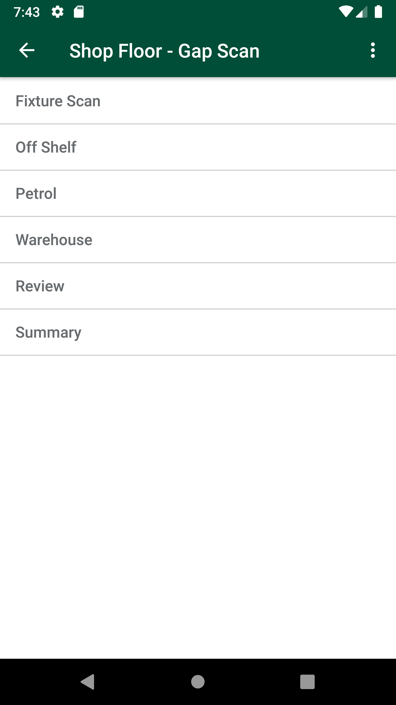
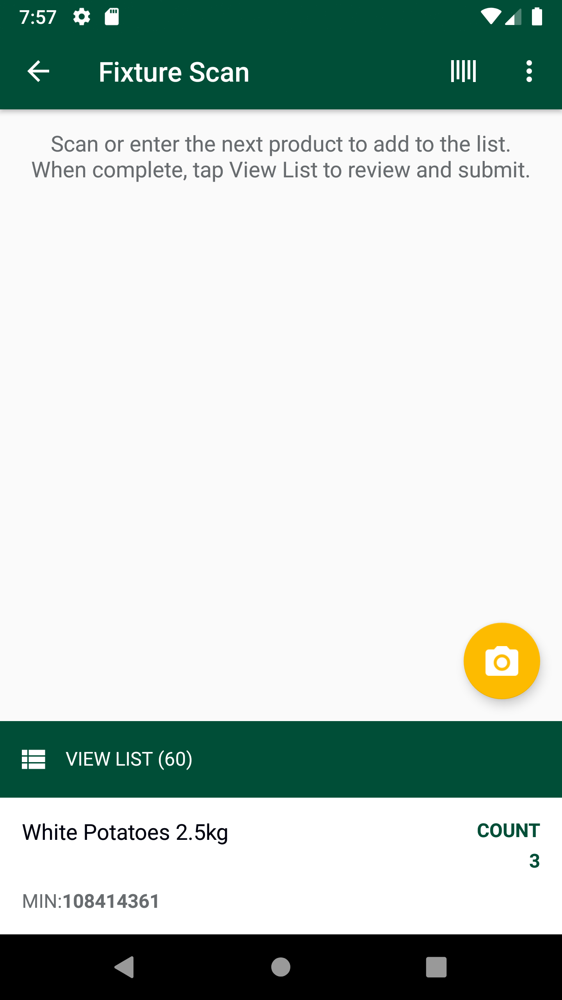
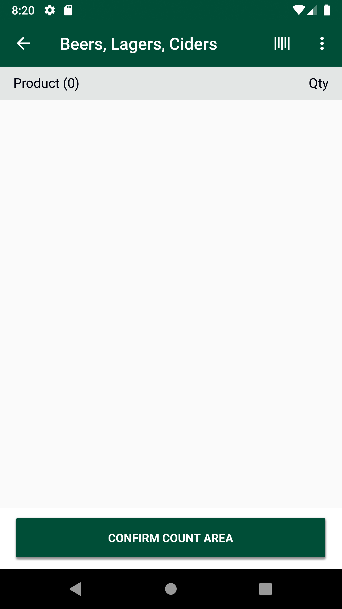
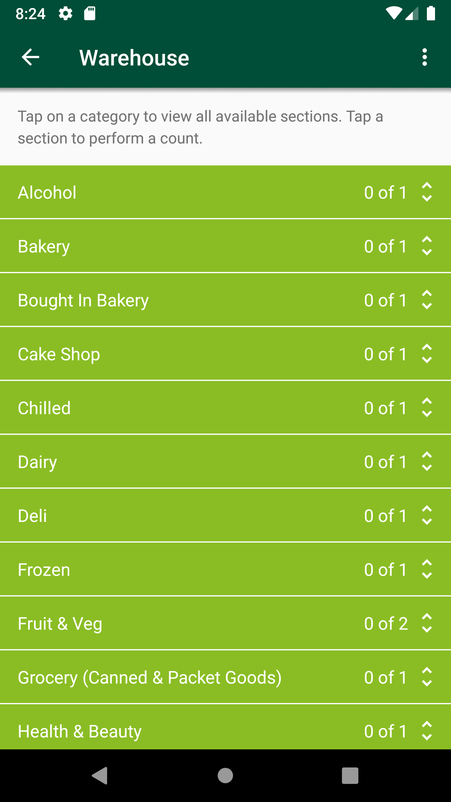
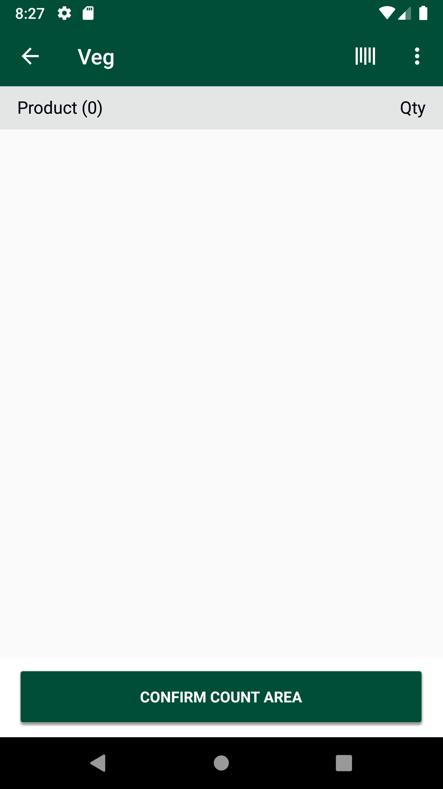
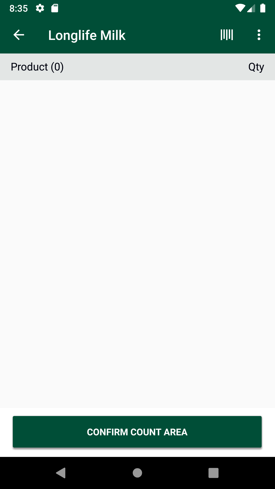

-
Scan GLH Mins with different count type and UOMs
12:11:21 PM / 03:10:53:864 Fail
Scan GLH Mins with different count type and UOMs
05.16.2024 12:11:21 PM 05.16.2024 3:22:14 PM 03:10:53:864 · #test-id=1@61NewGlhPart1New_701PassCreate SOH for itemsPassCreate SOH for itemsGiven I create SOH for the Items based on Response code "" " " " " " " PassTO CHANGE THE DEVICE TIMINGS AS REQUIREDPassTO CHANGE THE DEVICE TIMINGS AS REQUIREDGiven I send the time "07" and mins "00" and meridiem "am" and current date in listThen I Change timeThen I Change datePassTO CHANGE THE DEVICE TIMINGS AS REQUIREDGiven I send the time "07" and mins "00" and meridiem "am" and current date in listThen I Change timeThen I Change datePassDelete GLH Storewalk from ServicePassDelete GLH Storewalk from ServiceGiven request is made to capture access token and post endpoint for user v2 for "" Then I Verify the Response Code for the following "- " is 200
And I get the field value for the field "access_token"And Get the generated Access Tocken for SMA app Login ServiceGiven Get request is made to Get storewalks service for current dateAnd Get Operation perform on service requestThen Verify Get storewalks service response for current dateThen Delete request is made to Delete GLH storewalk for store id "8"FailVerify and Scan Count_type 'Single' and 'Cases' having UOM 'EA' of MIN for all department which include 'Positive' SOH in AM GLHPassVerify and Scan Count_type 'Single' and 'Cases' having UOM 'EA' of MIN for all department which include 'Positive' SOH in AM GLHWhen I enter Username and Password for SMA Collegue userAnd I click on login button for SMAThen I click on 'stockMngmtText' on page 'HomePagePO_New'Then I click on "Shop Floor - Gap Scan"And Get the generated Access Tocken for SMA app Login ServiceThen I click on Fixture ScanAnd I click on barcode entry ButtonThen Enter "104065909" numberAnd I click on COUNT buttonAnd I enter quantity "7" for fixture and warehouseAnd I choose the plan from popup if multiple records presentAnd I click on Back ButtonGiven Get request is made to Get storewalks service for current dateAnd Get Operation perform on service requestThen I verify Product id "104065909" for Store id "8" and Walk type "GapsHighsLows" is present in Get storewalk serviceThen I verify Capture details in storewalk for Product id "104065909" is Capture type "Count" Capture status "Incomplete" and Capture quantity "7"Then I verify Section status is "Available" in Get storewalk serviceGiven Get request is made to Get storewalks service for current dateAnd Get Operation perform on service requestThen Get Walkids from Getstorewalk service Store id "8"And Get the walk id for "GapsHighsLows"Given Get request is made to Get walkItem service for store id "8" and product id "104065909"And Get Operation perform on service requestThen Verify Get walkitem service responseAnd I Verify Get walkitem UOM "EA",Count Type "104065909", SOH and Action Type "Include"And I verify Get walkitem pack is present or notPassVerify and Scan Count_type 'Single' and 'Cases' having UOM 'EA' of MIN for all department which include 'Positive' SOH in AM GLHWhen I enter Username and Password for SMA Collegue userAnd I click on login button for SMAThen I click on 'stockMngmtText' on page 'HomePagePO_New'Then I click on "Shop Floor - Gap Scan"And Get the generated Access Tocken for SMA app Login ServiceThen I click on Fixture ScanAnd I click on barcode entry ButtonThen Enter "111358136" numberAnd I click on COUNT buttonAnd I enter quantity "6" for fixture and warehouseAnd I choose the plan from popup if multiple records presentAnd I click on Back ButtonGiven Get request is made to Get storewalks service for current dateAnd Get Operation perform on service requestThen I verify Product id "111358136" for Store id "8" and Walk type "GapsHighsLows" is present in Get storewalk serviceThen I verify Capture details in storewalk for Product id "111358136" is Capture type "Count" Capture status "Incomplete" and Capture quantity "6"Then I verify Section status is "Available" in Get storewalk serviceGiven Get request is made to Get storewalks service for current dateAnd Get Operation perform on service requestThen Get Walkids from Getstorewalk service Store id "8"And Get the walk id for "GapsHighsLows"Given Get request is made to Get walkItem service for store id "8" and product id "111358136"And Get Operation perform on service requestThen Verify Get walkitem service responseAnd I Verify Get walkitem UOM "EA",Count Type "111358136", SOH and Action Type "Include"And I verify Get walkitem pack is present or notPassVerify and Scan Count_type 'Single' and 'Cases' having UOM 'EA' of MIN for all department which include 'Positive' SOH in AM GLHWhen I enter Username and Password for SMA Collegue userAnd I click on login button for SMAThen I click on 'stockMngmtText' on page 'HomePagePO_New'Then I click on "Shop Floor - Gap Scan"And Get the generated Access Tocken for SMA app Login ServiceThen I click on Fixture ScanAnd I click on barcode entry ButtonThen Enter "107126295" numberAnd I click on COUNT buttonAnd I enter quantity "6" for fixture and warehouseAnd I choose the plan from popup if multiple records presentAnd I click on Back ButtonGiven Get request is made to Get storewalks service for current dateAnd Get Operation perform on service requestThen I verify Product id "107126295" for Store id "8" and Walk type "GapsHighsLows" is present in Get storewalk serviceThen I verify Capture details in storewalk for Product id "107126295" is Capture type "Count" Capture status "Incomplete" and Capture quantity "6"Then I verify Section status is "Available" in Get storewalk serviceGiven Get request is made to Get storewalks service for current dateAnd Get Operation perform on service requestThen Get Walkids from Getstorewalk service Store id "8"And Get the walk id for "GapsHighsLows"Given Get request is made to Get walkItem service for store id "8" and product id "107126295"And Get Operation perform on service requestThen Verify Get walkitem service responseAnd I Verify Get walkitem UOM "EA",Count Type "107126295", SOH and Action Type "Include"And I verify Get walkitem pack is present or notPassVerify and Scan Count_type 'Single' and 'Cases' having UOM 'EA' of MIN for all department which include 'Positive' SOH in AM GLHWhen I enter Username and Password for SMA Collegue userAnd I click on login button for SMAThen I click on 'stockMngmtText' on page 'HomePagePO_New'Then I click on "Shop Floor - Gap Scan"And Get the generated Access Tocken for SMA app Login ServiceThen I click on Fixture ScanAnd I click on barcode entry ButtonThen Enter "108629804" numberAnd I click on COUNT buttonAnd I enter quantity "9" for fixture and warehouseAnd I choose the plan from popup if multiple records presentAnd I click on Back ButtonGiven Get request is made to Get storewalks service for current dateAnd Get Operation perform on service requestThen I verify Product id "108629804" for Store id "8" and Walk type "GapsHighsLows" is present in Get storewalk serviceThen I verify Capture details in storewalk for Product id "108629804" is Capture type "Count" Capture status "Incomplete" and Capture quantity "9"Then I verify Section status is "Available" in Get storewalk serviceGiven Get request is made to Get storewalks service for current dateAnd Get Operation perform on service requestThen Get Walkids from Getstorewalk service Store id "8"And Get the walk id for "GapsHighsLows"Given Get request is made to Get walkItem service for store id "8" and product id "108629804"And Get Operation perform on service requestThen Verify Get walkitem service responseAnd I Verify Get walkitem UOM "EA",Count Type "108629804", SOH and Action Type "Include"And I verify Get walkitem pack is present or notPassVerify and Scan Count_type 'Single' and 'Cases' having UOM 'EA' of MIN for all department which include 'Positive' SOH in AM GLHWhen I enter Username and Password for SMA Collegue userAnd I click on login button for SMAThen I click on 'stockMngmtText' on page 'HomePagePO_New'Then I click on "Shop Floor - Gap Scan"And Get the generated Access Tocken for SMA app Login ServiceThen I click on Fixture ScanAnd I click on barcode entry ButtonThen Enter "110995598" numberAnd I click on COUNT buttonAnd I enter quantity "7" for fixture and warehouseAnd I choose the plan from popup if multiple records presentAnd I click on Back ButtonGiven Get request is made to Get storewalks service for current dateAnd Get Operation perform on service requestThen I verify Product id "110995598" for Store id "8" and Walk type "GapsHighsLows" is present in Get storewalk serviceThen I verify Capture details in storewalk for Product id "110995598" is Capture type "Count" Capture status "Incomplete" and Capture quantity "7"Then I verify Section status is "Available" in Get storewalk serviceGiven Get request is made to Get storewalks service for current dateAnd Get Operation perform on service requestThen Get Walkids from Getstorewalk service Store id "8"And Get the walk id for "GapsHighsLows"Given Get request is made to Get walkItem service for store id "8" and product id "110995598"And Get Operation perform on service requestThen Verify Get walkitem service responseAnd I Verify Get walkitem UOM "EA",Count Type "110995598", SOH and Action Type "Include"And I verify Get walkitem pack is present or notPassVerify and Scan Count_type 'Single' and 'Cases' having UOM 'EA' of MIN for all department which include 'Positive' SOH in AM GLHWhen I enter Username and Password for SMA Collegue userAnd I click on login button for SMAThen I click on 'stockMngmtText' on page 'HomePagePO_New'Then I click on "Shop Floor - Gap Scan"And Get the generated Access Tocken for SMA app Login ServiceThen I click on Fixture ScanAnd I click on barcode entry ButtonThen Enter "102370168" numberAnd I click on COUNT buttonAnd I enter quantity "7" for fixture and warehouseAnd I choose the plan from popup if multiple records presentAnd I click on Back ButtonGiven Get request is made to Get storewalks service for current dateAnd Get Operation perform on service requestThen I verify Product id "102370168" for Store id "8" and Walk type "GapsHighsLows" is present in Get storewalk serviceThen I verify Capture details in storewalk for Product id "102370168" is Capture type "Count" Capture status "Incomplete" and Capture quantity "7"Then I verify Section status is "Available" in Get storewalk serviceGiven Get request is made to Get storewalks service for current dateAnd Get Operation perform on service requestThen Get Walkids from Getstorewalk service Store id "8"And Get the walk id for "GapsHighsLows"Given Get request is made to Get walkItem service for store id "8" and product id "102370168"And Get Operation perform on service requestThen Verify Get walkitem service responseAnd I Verify Get walkitem UOM "EA",Count Type "102370168", SOH and Action Type "Include"And I verify Get walkitem pack is present or notPassVerify and Scan Count_type 'Single' and 'Cases' having UOM 'EA' of MIN for all department which include 'Positive' SOH in AM GLHWhen I enter Username and Password for SMA Collegue userAnd I click on login button for SMAThen I click on 'stockMngmtText' on page 'HomePagePO_New'Then I click on "Shop Floor - Gap Scan"And Get the generated Access Tocken for SMA app Login ServiceThen I click on Fixture ScanAnd I click on barcode entry ButtonThen Enter "105541065" numberAnd I click on COUNT buttonAnd I enter quantity "7" for fixture and warehouseAnd I choose the plan from popup if multiple records presentAnd I click on Back ButtonGiven Get request is made to Get storewalks service for current dateAnd Get Operation perform on service requestThen I verify Product id "105541065" for Store id "8" and Walk type "GapsHighsLows" is present in Get storewalk serviceThen I verify Capture details in storewalk for Product id "105541065" is Capture type "Count" Capture status "Incomplete" and Capture quantity "7"Then I verify Section status is "Available" in Get storewalk serviceGiven Get request is made to Get storewalks service for current dateAnd Get Operation perform on service requestThen Get Walkids from Getstorewalk service Store id "8"And Get the walk id for "GapsHighsLows"Given Get request is made to Get walkItem service for store id "8" and product id "105541065"And Get Operation perform on service requestThen Verify Get walkitem service responseAnd I Verify Get walkitem UOM "EA",Count Type "105541065", SOH and Action Type "Include"And I verify Get walkitem pack is present or notPassVerify and Scan Count_type 'Single' and 'Cases' having UOM 'EA' of MIN for all department which include 'Positive' SOH in AM GLHWhen I enter Username and Password for SMA Collegue userAnd I click on login button for SMAThen I click on 'stockMngmtText' on page 'HomePagePO_New'Then I click on "Shop Floor - Gap Scan"And Get the generated Access Tocken for SMA app Login ServiceThen I click on Fixture ScanAnd I click on barcode entry ButtonThen Enter "100001497" numberAnd I click on COUNT buttonAnd I enter quantity "4" for fixture and warehouseAnd I choose the plan from popup if multiple records presentAnd I click on Back ButtonGiven Get request is made to Get storewalks service for current dateAnd Get Operation perform on service requestThen I verify Product id "100001497" for Store id "8" and Walk type "GapsHighsLows" is present in Get storewalk serviceThen I verify Capture details in storewalk for Product id "100001497" is Capture type "Count" Capture status "Incomplete" and Capture quantity "4"Then I verify Section status is "Available" in Get storewalk serviceGiven Get request is made to Get storewalks service for current dateAnd Get Operation perform on service requestThen Get Walkids from Getstorewalk service Store id "8"And Get the walk id for "GapsHighsLows"Given Get request is made to Get walkItem service for store id "8" and product id "100001497"And Get Operation perform on service requestThen Verify Get walkitem service responseAnd I Verify Get walkitem UOM "EA",Count Type "100001497", SOH and Action Type "Include"And I verify Get walkitem pack is present or notPassVerify and Scan Count_type 'Single' and 'Cases' having UOM 'EA' of MIN for all department which include 'Positive' SOH in AM GLHWhen I enter Username and Password for SMA Collegue userAnd I click on login button for SMAThen I click on 'stockMngmtText' on page 'HomePagePO_New'Then I click on "Shop Floor - Gap Scan"And Get the generated Access Tocken for SMA app Login ServiceThen I click on Fixture ScanAnd I click on barcode entry ButtonThen Enter "104003441" numberAnd I click on COUNT buttonAnd I enter quantity "7" for fixture and warehouseAnd I choose the plan from popup if multiple records presentAnd I click on Back ButtonGiven Get request is made to Get storewalks service for current dateAnd Get Operation perform on service requestThen I verify Product id "104003441" for Store id "8" and Walk type "GapsHighsLows" is present in Get storewalk serviceThen I verify Capture details in storewalk for Product id "104003441" is Capture type "Count" Capture status "Incomplete" and Capture quantity "7"Then I verify Section status is "Available" in Get storewalk serviceGiven Get request is made to Get storewalks service for current dateAnd Get Operation perform on service requestThen Get Walkids from Getstorewalk service Store id "8"And Get the walk id for "GapsHighsLows"Given Get request is made to Get walkItem service for store id "8" and product id "104003441"And Get Operation perform on service requestThen Verify Get walkitem service responseAnd I Verify Get walkitem UOM "EA",Count Type "104003441", SOH and Action Type "Include"And I verify Get walkitem pack is present or notPassVerify and Scan Count_type 'Single' and 'Cases' having UOM 'EA' of MIN for all department which include 'Positive' SOH in AM GLHWhen I enter Username and Password for SMA Collegue userAnd I click on login button for SMAThen I click on 'stockMngmtText' on page 'HomePagePO_New'Then I click on "Shop Floor - Gap Scan"And Get the generated Access Tocken for SMA app Login ServiceThen I click on Fixture ScanAnd I click on barcode entry ButtonThen Enter "104065909" numberAnd I click on COUNT buttonAnd I enter quantity "7" for fixture and warehouseAnd I choose the plan from popup if multiple records presentAnd I click on Back ButtonGiven Get request is made to Get storewalks service for current dateAnd Get Operation perform on service requestThen I verify Product id "104065909" for Store id "8" and Walk type "GapsHighsLows" is present in Get storewalk serviceThen I verify Capture details in storewalk for Product id "104065909" is Capture type "Count" Capture status "Incomplete" and Capture quantity "7"Then I verify Section status is "Available" in Get storewalk serviceGiven Get request is made to Get storewalks service for current dateAnd Get Operation perform on service requestThen Get Walkids from Getstorewalk service Store id "8"And Get the walk id for "GapsHighsLows"Given Get request is made to Get walkItem service for store id "8" and product id "104065909"And Get Operation perform on service requestThen Verify Get walkitem service responseAnd I Verify Get walkitem UOM "EA",Count Type "104065909", SOH and Action Type "Include"And I verify Get walkitem pack is present or notPassVerify and Scan Count_type 'Single' and 'Cases' having UOM 'EA' of MIN for all department which include 'Positive' SOH in AM GLHWhen I enter Username and Password for SMA Collegue userAnd I click on login button for SMAThen I click on 'stockMngmtText' on page 'HomePagePO_New'Then I click on "Shop Floor - Gap Scan"And Get the generated Access Tocken for SMA app Login ServiceThen I click on Fixture ScanAnd I click on barcode entry ButtonThen Enter "110747754" numberAnd I click on COUNT buttonAnd I enter quantity "1" for fixture and warehouseAnd I choose the plan from popup if multiple records presentAnd I click on Back ButtonGiven Get request is made to Get storewalks service for current dateAnd Get Operation perform on service requestThen I verify Product id "110747754" for Store id "8" and Walk type "GapsHighsLows" is present in Get storewalk serviceThen I verify Capture details in storewalk for Product id "110747754" is Capture type "Count" Capture status "Incomplete" and Capture quantity "1"Then I verify Section status is "Available" in Get storewalk serviceGiven Get request is made to Get storewalks service for current dateAnd Get Operation perform on service requestThen Get Walkids from Getstorewalk service Store id "8"And Get the walk id for "GapsHighsLows"Given Get request is made to Get walkItem service for store id "8" and product id "110747754"And Get Operation perform on service requestThen Verify Get walkitem service responseAnd I Verify Get walkitem UOM "EA",Count Type "110747754", SOH and Action Type "Include"And I verify Get walkitem pack is present or notFailVerify and Scan Count_type 'Single' and 'Cases' having UOM 'EA' of MIN for all department which include 'Positive' SOH in AM GLHWhen I enter Username and Password for SMA Collegue userAnd I click on login button for SMAThen I click on 'stockMngmtText' on page 'HomePagePO_New'Then I click on "Shop Floor - Gap Scan"com.morrisons.common.action.Hook.afterScenario(io.cucumber.java.Scenario)And Get the generated Access Tocken for SMA app Login ServiceStep skippedThen I click on Fixture ScanStep skippedAnd I click on barcode entry ButtonStep skippedThen Enter "108810996" numberStep skippedAnd I click on COUNT buttonStep skippedAnd I enter quantity "6" for fixture and warehouseStep skippedAnd I choose the plan from popup if multiple records presentStep skippedAnd I click on Back ButtonStep skippedGiven Get request is made to Get storewalks service for current dateStep skippedAnd Get Operation perform on service requestStep skippedThen I verify Product id "108810996" for Store id "8" and Walk type "GapsHighsLows" is present in Get storewalk serviceStep skippedThen I verify Capture details in storewalk for Product id "108810996" is Capture type "Count" Capture status "Incomplete" and Capture quantity "6"Step skippedThen I verify Section status is "Available" in Get storewalk serviceStep skippedGiven Get request is made to Get storewalks service for current dateStep skippedAnd Get Operation perform on service requestStep skippedThen Get Walkids from Getstorewalk service Store id "8"Step skippedAnd Get the walk id for "GapsHighsLows"Step skippedGiven Get request is made to Get walkItem service for store id "8" and product id "108810996"Step skippedAnd Get Operation perform on service requestStep skippedThen Verify Get walkitem service responseStep skippedAnd I Verify Get walkitem UOM "EA",Count Type "108810996", SOH and Action Type "Include"Step skippedAnd I verify Get walkitem pack is present or notStep skippedPassVerify and Scan Count_type 'Single' and 'Cases' having UOM 'EA' of MIN for all department which include 'Positive' SOH in AM GLHWhen I enter Username and Password for SMA Collegue userAnd I click on login button for SMAThen I click on 'stockMngmtText' on page 'HomePagePO_New'Then I click on "Shop Floor - Gap Scan"And Get the generated Access Tocken for SMA app Login ServiceThen I click on Fixture ScanAnd I click on barcode entry ButtonThen Enter "109361221" numberAnd I click on COUNT buttonAnd I enter quantity "7" for fixture and warehouseAnd I choose the plan from popup if multiple records presentAnd I click on Back ButtonGiven Get request is made to Get storewalks service for current dateAnd Get Operation perform on service requestThen I verify Product id "109361221" for Store id "8" and Walk type "GapsHighsLows" is present in Get storewalk serviceThen I verify Capture details in storewalk for Product id "109361221" is Capture type "Count" Capture status "Incomplete" and Capture quantity "7"Then I verify Section status is "Available" in Get storewalk serviceGiven Get request is made to Get storewalks service for current dateAnd Get Operation perform on service requestThen Get Walkids from Getstorewalk service Store id "8"And Get the walk id for "GapsHighsLows"Given Get request is made to Get walkItem service for store id "8" and product id "109361221"And Get Operation perform on service requestThen Verify Get walkitem service responseAnd I Verify Get walkitem UOM "EA",Count Type "109361221", SOH and Action Type "Include"And I verify Get walkitem pack is present or notFailVerify and Scan Count_type 'Single' and 'Cases' having UOM 'KG' of MIN for all department which include 'Positive' SOH in AM GLHPassVerify and Scan Count_type 'Single' and 'Cases' having UOM 'KG' of MIN for all department which include 'Positive' SOH in AM GLHWhen I enter Username and Password for SMA Collegue userAnd I click on login button for SMAThen I click on 'stockMngmtText' on page 'HomePagePO_New'Then I click on "Shop Floor - Gap Scan"And Get the generated Access Tocken for SMA app Login ServiceThen I click on Fixture ScanAnd I click on barcode entry ButtonThen Enter "108394582" numberAnd I click on COUNT buttonAnd I enter quantity "3" for fixture and warehouseAnd I choose the plan from popup if multiple records presentAnd I click on Back ButtonGiven Get request is made to Get storewalks service for current dateAnd Get Operation perform on service requestThen I verify Product id "108394582" for Store id "8" and Walk type "GapsHighsLows" is present in Get storewalk serviceThen I verify Capture details in storewalk for Product id "108394582" is Capture type "Count" Capture status "Incomplete" and Capture quantity "3"Then I verify Section status is "Available" in Get storewalk serviceGiven Get request is made to Get storewalks service for current dateAnd Get Operation perform on service requestThen Get Walkids from Getstorewalk service Store id "8"And Get the walk id for "GapsHighsLows"Given Get request is made to Get walkItem service for store id "8" and product id "108394582"And Get Operation perform on service requestThen Verify Get walkitem service responseAnd I Verify Get walkitem UOM "KG",Count Type "108394582", SOH and Action Type "Include"And I verify Get walkitem pack is present or notGiven ProductId "108394582" and StoreID "8" is included in the Stock ServiceWhen Request is made into Stock serviceThen Service should return the details of the Stock servicePassVerify and Scan Count_type 'Single' and 'Cases' having UOM 'KG' of MIN for all department which include 'Positive' SOH in AM GLHWhen I enter Username and Password for SMA Collegue userAnd I click on login button for SMAThen I click on 'stockMngmtText' on page 'HomePagePO_New'Then I click on "Shop Floor - Gap Scan"And Get the generated Access Tocken for SMA app Login ServiceThen I click on Fixture ScanAnd I click on barcode entry ButtonThen Enter "108524922" numberAnd I click on COUNT buttonAnd I enter quantity "9" for fixture and warehouseAnd I choose the plan from popup if multiple records presentAnd I click on Back ButtonGiven Get request is made to Get storewalks service for current dateAnd Get Operation perform on service requestThen I verify Product id "108524922" for Store id "8" and Walk type "GapsHighsLows" is present in Get storewalk serviceThen I verify Capture details in storewalk for Product id "108524922" is Capture type "Count" Capture status "Incomplete" and Capture quantity "9"Then I verify Section status is "Available" in Get storewalk serviceGiven Get request is made to Get storewalks service for current dateAnd Get Operation perform on service requestThen Get Walkids from Getstorewalk service Store id "8"And Get the walk id for "GapsHighsLows"Given Get request is made to Get walkItem service for store id "8" and product id "108524922"And Get Operation perform on service requestThen Verify Get walkitem service responseAnd I Verify Get walkitem UOM "KG",Count Type "108524922", SOH and Action Type "Include"And I verify Get walkitem pack is present or notGiven ProductId "108524922" and StoreID "8" is included in the Stock ServiceWhen Request is made into Stock serviceThen Service should return the details of the Stock servicePassVerify and Scan Count_type 'Single' and 'Cases' having UOM 'KG' of MIN for all department which include 'Positive' SOH in AM GLHWhen I enter Username and Password for SMA Collegue userAnd I click on login button for SMAThen I click on 'stockMngmtText' on page 'HomePagePO_New'Then I click on "Shop Floor - Gap Scan"And Get the generated Access Tocken for SMA app Login ServiceThen I click on Fixture ScanAnd I click on barcode entry ButtonThen Enter "108543859" numberAnd I click on COUNT buttonAnd I enter quantity "9" for fixture and warehouseAnd I choose the plan from popup if multiple records presentAnd I click on Back ButtonGiven Get request is made to Get storewalks service for current dateAnd Get Operation perform on service requestThen I verify Product id "108543859" for Store id "8" and Walk type "GapsHighsLows" is present in Get storewalk serviceThen I verify Capture details in storewalk for Product id "108543859" is Capture type "Count" Capture status "Incomplete" and Capture quantity "9"Then I verify Section status is "Available" in Get storewalk serviceGiven Get request is made to Get storewalks service for current dateAnd Get Operation perform on service requestThen Get Walkids from Getstorewalk service Store id "8"And Get the walk id for "GapsHighsLows"Given Get request is made to Get walkItem service for store id "8" and product id "108543859"And Get Operation perform on service requestThen Verify Get walkitem service responseAnd I Verify Get walkitem UOM "KG",Count Type "108543859", SOH and Action Type "Include"And I verify Get walkitem pack is present or notGiven ProductId "108543859" and StoreID "8" is included in the Stock ServiceWhen Request is made into Stock serviceThen Service should return the details of the Stock servicePassVerify and Scan Count_type 'Single' and 'Cases' having UOM 'KG' of MIN for all department which include 'Positive' SOH in AM GLHWhen I enter Username and Password for SMA Collegue userAnd I click on login button for SMAThen I click on 'stockMngmtText' on page 'HomePagePO_New'Then I click on "Shop Floor - Gap Scan"And Get the generated Access Tocken for SMA app Login ServiceThen I click on Fixture ScanAnd I click on barcode entry ButtonThen Enter "108368632" numberAnd I click on COUNT buttonAnd I enter quantity "9" for fixture and warehouseAnd I choose the plan from popup if multiple records presentAnd I click on Back ButtonGiven Get request is made to Get storewalks service for current dateAnd Get Operation perform on service requestThen I verify Product id "108368632" for Store id "8" and Walk type "GapsHighsLows" is present in Get storewalk serviceThen I verify Capture details in storewalk for Product id "108368632" is Capture type "Count" Capture status "Incomplete" and Capture quantity "9"Then I verify Section status is "Available" in Get storewalk serviceGiven Get request is made to Get storewalks service for current dateAnd Get Operation perform on service requestThen Get Walkids from Getstorewalk service Store id "8"And Get the walk id for "GapsHighsLows"Given Get request is made to Get walkItem service for store id "8" and product id "108368632"And Get Operation perform on service requestThen Verify Get walkitem service responseAnd I Verify Get walkitem UOM "KG",Count Type "108368632", SOH and Action Type "Include"And I verify Get walkitem pack is present or notGiven ProductId "108368632" and StoreID "8" is included in the Stock ServiceWhen Request is made into Stock serviceThen Service should return the details of the Stock servicePassVerify and Scan Count_type 'Single' and 'Cases' having UOM 'KG' of MIN for all department which include 'Positive' SOH in AM GLHWhen I enter Username and Password for SMA Collegue userAnd I click on login button for SMAThen I click on 'stockMngmtText' on page 'HomePagePO_New'Then I click on "Shop Floor - Gap Scan"And Get the generated Access Tocken for SMA app Login ServiceThen I click on Fixture ScanAnd I click on barcode entry ButtonThen Enter "108335700" numberAnd I click on COUNT buttonAnd I enter quantity "9" for fixture and warehouseAnd I choose the plan from popup if multiple records presentAnd I click on Back ButtonGiven Get request is made to Get storewalks service for current dateAnd Get Operation perform on service requestThen I verify Product id "108335700" for Store id "8" and Walk type "GapsHighsLows" is present in Get storewalk serviceThen I verify Capture details in storewalk for Product id "108335700" is Capture type "Count" Capture status "Incomplete" and Capture quantity "9"Then I verify Section status is "Available" in Get storewalk serviceGiven Get request is made to Get storewalks service for current dateAnd Get Operation perform on service requestThen Get Walkids from Getstorewalk service Store id "8"And Get the walk id for "GapsHighsLows"Given Get request is made to Get walkItem service for store id "8" and product id "108335700"And Get Operation perform on service requestThen Verify Get walkitem service responseAnd I Verify Get walkitem UOM "KG",Count Type "108335700", SOH and Action Type "Include"And I verify Get walkitem pack is present or notGiven ProductId "108335700" and StoreID "8" is included in the Stock ServiceWhen Request is made into Stock serviceThen Service should return the details of the Stock servicePassVerify and Scan Count_type 'Single' and 'Cases' having UOM 'KG' of MIN for all department which include 'Positive' SOH in AM GLHWhen I enter Username and Password for SMA Collegue userAnd I click on login button for SMAThen I click on 'stockMngmtText' on page 'HomePagePO_New'Then I click on "Shop Floor - Gap Scan"And Get the generated Access Tocken for SMA app Login ServiceThen I click on Fixture ScanAnd I click on barcode entry ButtonThen Enter "108335777" numberAnd I click on COUNT buttonAnd I enter quantity "9" for fixture and warehouseAnd I choose the plan from popup if multiple records presentAnd I click on Back ButtonGiven Get request is made to Get storewalks service for current dateAnd Get Operation perform on service requestThen I verify Product id "108335777" for Store id "8" and Walk type "GapsHighsLows" is present in Get storewalk serviceThen I verify Capture details in storewalk for Product id "108335777" is Capture type "Count" Capture status "Incomplete" and Capture quantity "9"Then I verify Section status is "Available" in Get storewalk serviceGiven Get request is made to Get storewalks service for current dateAnd Get Operation perform on service requestThen Get Walkids from Getstorewalk service Store id "8"And Get the walk id for "GapsHighsLows"Given Get request is made to Get walkItem service for store id "8" and product id "108335777"And Get Operation perform on service requestThen Verify Get walkitem service responseAnd I Verify Get walkitem UOM "KG",Count Type "108335777", SOH and Action Type "Include"And I verify Get walkitem pack is present or notGiven ProductId "108335777" and StoreID "8" is included in the Stock ServiceWhen Request is made into Stock serviceThen Service should return the details of the Stock servicePassVerify and Scan Count_type 'Single' and 'Cases' having UOM 'KG' of MIN for all department which include 'Positive' SOH in AM GLHWhen I enter Username and Password for SMA Collegue userAnd I click on login button for SMAThen I click on 'stockMngmtText' on page 'HomePagePO_New'Then I click on "Shop Floor - Gap Scan"And Get the generated Access Tocken for SMA app Login ServiceThen I click on Fixture ScanAnd I click on barcode entry ButtonThen Enter "109202204" numberAnd I click on COUNT buttonAnd I enter quantity "9" for fixture and warehouseAnd I choose the plan from popup if multiple records presentAnd I click on Back ButtonGiven Get request is made to Get storewalks service for current dateAnd Get Operation perform on service requestThen I verify Product id "109202204" for Store id "8" and Walk type "GapsHighsLows" is present in Get storewalk serviceThen I verify Capture details in storewalk for Product id "109202204" is Capture type "Count" Capture status "Incomplete" and Capture quantity "9"Then I verify Section status is "Available" in Get storewalk serviceGiven Get request is made to Get storewalks service for current dateAnd Get Operation perform on service requestThen Get Walkids from Getstorewalk service Store id "8"And Get the walk id for "GapsHighsLows"Given Get request is made to Get walkItem service for store id "8" and product id "109202204"And Get Operation perform on service requestThen Verify Get walkitem service responseAnd I Verify Get walkitem UOM "KG",Count Type "109202204", SOH and Action Type "Include"And I verify Get walkitem pack is present or notGiven ProductId "109202204" and StoreID "8" is included in the Stock ServiceWhen Request is made into Stock serviceThen Service should return the details of the Stock serviceFailVerify and Scan Count_type 'Single' and 'Cases' having UOM 'KG' of MIN for all department which include 'Positive' SOH in AM GLHWhen I enter Username and Password for SMA Collegue userAnd I click on login button for SMAThen I click on 'stockMngmtText' on page 'HomePagePO_New'Then I click on "Shop Floor - Gap Scan"And Get the generated Access Tocken for SMA app Login ServiceThen I click on Fixture ScanAnd I click on barcode entry ButtonThen Enter "104058522" numberAnd I click on COUNT buttonAnd I enter quantity "9" for fixture and warehouseAnd I choose the plan from popup if multiple records presentAnd I click on Back ButtonGiven Get request is made to Get storewalks service for current dateAnd Get Operation perform on service requestThen I verify Product id "104058522" for Store id "8" and Walk type "GapsHighsLows" is present in Get storewalk serviceThen I verify Capture details in storewalk for Product id "104058522" is Capture type "Count" Capture status "Incomplete" and Capture quantity "9"Then I verify Section status is "Available" in Get storewalk serviceGiven Get request is made to Get storewalks service for current dateAnd Get Operation perform on service requestThen Get Walkids from Getstorewalk service Store id "8"And Get the walk id for "GapsHighsLows"Given Get request is made to Get walkItem service for store id "8" and product id "104058522"And Get Operation perform on service requestThen Verify Get walkitem service responseAnd I Verify Get walkitem UOM "KG",Count Type "104058522", SOH and Action Type "Include"com.morrisons.common.action.Hook.afterScenario(io.cucumber.java.Scenario)And I verify Get walkitem pack is present or notStep skippedGiven ProductId "104058522" and StoreID "8" is included in the Stock ServiceStep skippedWhen Request is made into Stock serviceStep skippedThen Service should return the details of the Stock serviceStep skippedFailVerify and Scan Count_type 'Single' and 'Cases' having UOM 'PCS' of MIN for all department which include 'Positive' SOH in AM GLHPassVerify and Scan Count_type 'Single' and 'Cases' having UOM 'PCS' of MIN for all department which include 'Positive' SOH in AM GLHWhen I enter Username and Password for SMA Collegue userAnd I click on login button for SMAThen I click on 'stockMngmtText' on page 'HomePagePO_New'Then I click on "Shop Floor - Gap Scan"And Get the generated Access Tocken for SMA app Login ServiceThen I click on Fixture ScanAnd I click on barcode entry ButtonThen Enter "108779061" numberAnd I click on COUNT buttonAnd I enter quantity "3" for fixture and warehouseAnd I choose the plan from popup if multiple records presentAnd I click on Back ButtonGiven Get request is made to Get storewalks service for current dateAnd Get Operation perform on service requestThen I verify Product id "108779061" for Store id "8" and Walk type "GapsHighsLows" is present in Get storewalk serviceThen I verify Capture details in storewalk for Product id "108779061" is Capture type "Count" Capture status "Incomplete" and Capture quantity "3"Then I verify Section status is "Available" in Get storewalk serviceGiven Get request is made to Get storewalks service for current dateAnd Get Operation perform on service requestThen Get Walkids from Getstorewalk service Store id "8"And Get the walk id for "GapsHighsLows"Given Get request is made to Get walkItem service for store id "8" and product id "108779061"And Get Operation perform on service requestThen Verify Get walkitem service responseAnd I Verify Get walkitem UOM "PCS",Count Type "108779061", SOH and Action Type "Include"And I verify Get walkitem pack is present or notGiven ProductId "108779061" and StoreID "8" is included in the Stock ServiceWhen Request is made into Stock serviceThen Service should return the details of the Stock servicePassVerify and Scan Count_type 'Single' and 'Cases' having UOM 'PCS' of MIN for all department which include 'Positive' SOH in AM GLHWhen I enter Username and Password for SMA Collegue userAnd I click on login button for SMAThen I click on 'stockMngmtText' on page 'HomePagePO_New'Then I click on "Shop Floor - Gap Scan"And Get the generated Access Tocken for SMA app Login ServiceThen I click on Fixture ScanAnd I click on barcode entry ButtonThen Enter "107694381" numberAnd I click on COUNT buttonAnd I enter quantity "3" for fixture and warehouseAnd I choose the plan from popup if multiple records presentAnd I click on Back ButtonGiven Get request is made to Get storewalks service for current dateAnd Get Operation perform on service requestThen I verify Product id "107694381" for Store id "8" and Walk type "GapsHighsLows" is present in Get storewalk serviceThen I verify Capture details in storewalk for Product id "107694381" is Capture type "Count" Capture status "Incomplete" and Capture quantity "3"Then I verify Section status is "Available" in Get storewalk serviceGiven Get request is made to Get storewalks service for current dateAnd Get Operation perform on service requestThen Get Walkids from Getstorewalk service Store id "8"And Get the walk id for "GapsHighsLows"Given Get request is made to Get walkItem service for store id "8" and product id "107694381"And Get Operation perform on service requestThen Verify Get walkitem service responseAnd I Verify Get walkitem UOM "PCS",Count Type "107694381", SOH and Action Type "Include"And I verify Get walkitem pack is present or notGiven ProductId "107694381" and StoreID "8" is included in the Stock ServiceWhen Request is made into Stock serviceThen Service should return the details of the Stock servicePassVerify and Scan Count_type 'Single' and 'Cases' having UOM 'PCS' of MIN for all department which include 'Positive' SOH in AM GLHWhen I enter Username and Password for SMA Collegue userAnd I click on login button for SMAThen I click on 'stockMngmtText' on page 'HomePagePO_New'Then I click on "Shop Floor - Gap Scan"And Get the generated Access Tocken for SMA app Login ServiceThen I click on Fixture ScanAnd I click on barcode entry ButtonThen Enter "103853612" numberAnd I click on COUNT buttonAnd I enter quantity "3" for fixture and warehouseAnd I choose the plan from popup if multiple records presentAnd I click on Back ButtonGiven Get request is made to Get storewalks service for current dateAnd Get Operation perform on service requestThen I verify Product id "103853612" for Store id "8" and Walk type "GapsHighsLows" is present in Get storewalk serviceThen I verify Capture details in storewalk for Product id "103853612" is Capture type "Count" Capture status "Incomplete" and Capture quantity "3"Then I verify Section status is "Available" in Get storewalk serviceGiven Get request is made to Get storewalks service for current dateAnd Get Operation perform on service requestThen Get Walkids from Getstorewalk service Store id "8"And Get the walk id for "GapsHighsLows"Given Get request is made to Get walkItem service for store id "8" and product id "103853612"And Get Operation perform on service requestThen Verify Get walkitem service responseAnd I Verify Get walkitem UOM "PCS",Count Type "103853612", SOH and Action Type "Include"And I verify Get walkitem pack is present or notGiven ProductId "103853612" and StoreID "8" is included in the Stock ServiceWhen Request is made into Stock serviceThen Service should return the details of the Stock servicePassVerify and Scan Count_type 'Single' and 'Cases' having UOM 'PCS' of MIN for all department which include 'Positive' SOH in AM GLHWhen I enter Username and Password for SMA Collegue userAnd I click on login button for SMAThen I click on 'stockMngmtText' on page 'HomePagePO_New'Then I click on "Shop Floor - Gap Scan"And Get the generated Access Tocken for SMA app Login ServiceThen I click on Fixture ScanAnd I click on barcode entry ButtonThen Enter "102370011" numberAnd I click on COUNT buttonAnd I enter quantity "3" for fixture and warehouseAnd I choose the plan from popup if multiple records presentAnd I click on Back ButtonGiven Get request is made to Get storewalks service for current dateAnd Get Operation perform on service requestThen I verify Product id "102370011" for Store id "8" and Walk type "GapsHighsLows" is present in Get storewalk serviceThen I verify Capture details in storewalk for Product id "102370011" is Capture type "Count" Capture status "Incomplete" and Capture quantity "3"Then I verify Section status is "Available" in Get storewalk serviceGiven Get request is made to Get storewalks service for current dateAnd Get Operation perform on service requestThen Get Walkids from Getstorewalk service Store id "8"And Get the walk id for "GapsHighsLows"Given Get request is made to Get walkItem service for store id "8" and product id "102370011"And Get Operation perform on service requestThen Verify Get walkitem service responseAnd I Verify Get walkitem UOM "PCS",Count Type "102370011", SOH and Action Type "Include"And I verify Get walkitem pack is present or notGiven ProductId "102370011" and StoreID "8" is included in the Stock ServiceWhen Request is made into Stock serviceThen Service should return the details of the Stock servicePassVerify and Scan Count_type 'Single' and 'Cases' having UOM 'PCS' of MIN for all department which include 'Positive' SOH in AM GLHWhen I enter Username and Password for SMA Collegue userAnd I click on login button for SMAThen I click on 'stockMngmtText' on page 'HomePagePO_New'Then I click on "Shop Floor - Gap Scan"And Get the generated Access Tocken for SMA app Login ServiceThen I click on Fixture ScanAnd I click on barcode entry ButtonThen Enter "102369685" numberAnd I click on COUNT buttonAnd I enter quantity "3" for fixture and warehouseAnd I choose the plan from popup if multiple records presentAnd I click on Back ButtonGiven Get request is made to Get storewalks service for current dateAnd Get Operation perform on service requestThen I verify Product id "102369685" for Store id "8" and Walk type "GapsHighsLows" is present in Get storewalk serviceThen I verify Capture details in storewalk for Product id "102369685" is Capture type "Count" Capture status "Incomplete" and Capture quantity "3"Then I verify Section status is "Available" in Get storewalk serviceGiven Get request is made to Get storewalks service for current dateAnd Get Operation perform on service requestThen Get Walkids from Getstorewalk service Store id "8"And Get the walk id for "GapsHighsLows"Given Get request is made to Get walkItem service for store id "8" and product id "102369685"And Get Operation perform on service requestThen Verify Get walkitem service responseAnd I Verify Get walkitem UOM "PCS",Count Type "102369685", SOH and Action Type "Include"And I verify Get walkitem pack is present or notGiven ProductId "102369685" and StoreID "8" is included in the Stock ServiceWhen Request is made into Stock serviceThen Service should return the details of the Stock servicePassVerify and Scan Count_type 'Single' and 'Cases' having UOM 'PCS' of MIN for all department which include 'Positive' SOH in AM GLHWhen I enter Username and Password for SMA Collegue userAnd I click on login button for SMAThen I click on 'stockMngmtText' on page 'HomePagePO_New'Then I click on "Shop Floor - Gap Scan"And Get the generated Access Tocken for SMA app Login ServiceThen I click on Fixture ScanAnd I click on barcode entry ButtonThen Enter "102369685" numberAnd I click on COUNT buttonAnd I enter quantity "3" for fixture and warehouseAnd I choose the plan from popup if multiple records presentAnd I click on Back ButtonGiven Get request is made to Get storewalks service for current dateAnd Get Operation perform on service requestThen I verify Product id "102369685" for Store id "8" and Walk type "GapsHighsLows" is present in Get storewalk serviceThen I verify Capture details in storewalk for Product id "102369685" is Capture type "Count" Capture status "Incomplete" and Capture quantity "3"Then I verify Section status is "Available" in Get storewalk serviceGiven Get request is made to Get storewalks service for current dateAnd Get Operation perform on service requestThen Get Walkids from Getstorewalk service Store id "8"And Get the walk id for "GapsHighsLows"Given Get request is made to Get walkItem service for store id "8" and product id "102369685"And Get Operation perform on service requestThen Verify Get walkitem service responseAnd I Verify Get walkitem UOM "PCS",Count Type "102369685", SOH and Action Type "Include"And I verify Get walkitem pack is present or notGiven ProductId "102369685" and StoreID "8" is included in the Stock ServiceWhen Request is made into Stock serviceThen Service should return the details of the Stock servicePassVerify and Scan Count_type 'Single' and 'Cases' having UOM 'PCS' of MIN for all department which include 'Positive' SOH in AM GLHWhen I enter Username and Password for SMA Collegue userAnd I click on login button for SMAThen I click on 'stockMngmtText' on page 'HomePagePO_New'Then I click on "Shop Floor - Gap Scan"And Get the generated Access Tocken for SMA app Login ServiceThen I click on Fixture ScanAnd I click on barcode entry ButtonThen Enter "105198164" numberAnd I click on COUNT buttonAnd I enter quantity "3" for fixture and warehouseAnd I choose the plan from popup if multiple records presentAnd I click on Back ButtonGiven Get request is made to Get storewalks service for current dateAnd Get Operation perform on service requestThen I verify Product id "105198164" for Store id "8" and Walk type "GapsHighsLows" is present in Get storewalk serviceThen I verify Capture details in storewalk for Product id "105198164" is Capture type "Count" Capture status "Incomplete" and Capture quantity "3"Then I verify Section status is "Available" in Get storewalk serviceGiven Get request is made to Get storewalks service for current dateAnd Get Operation perform on service requestThen Get Walkids from Getstorewalk service Store id "8"And Get the walk id for "GapsHighsLows"Given Get request is made to Get walkItem service for store id "8" and product id "105198164"And Get Operation perform on service requestThen Verify Get walkitem service responseAnd I Verify Get walkitem UOM "PCS",Count Type "105198164", SOH and Action Type "Include"And I verify Get walkitem pack is present or notGiven ProductId "105198164" and StoreID "8" is included in the Stock ServiceWhen Request is made into Stock serviceThen Service should return the details of the Stock serviceFailVerify and Scan Count_type 'Single' and 'Cases' having UOM 'PCS' of MIN for all department which include 'Positive' SOH in AM GLHWhen I enter Username and Password for SMA Collegue userAnd I click on login button for SMAThen I click on 'stockMngmtText' on page 'HomePagePO_New'Then I click on "Shop Floor - Gap Scan"And Get the generated Access Tocken for SMA app Login ServiceThen I click on Fixture ScanAnd I click on barcode entry ButtonThen Enter "109361221" numberAnd I click on COUNT buttonAnd I enter quantity "3" for fixture and warehouseAnd I choose the plan from popup if multiple records presentAnd I click on Back ButtonGiven Get request is made to Get storewalks service for current dateAnd Get Operation perform on service requestThen I verify Product id "109361221" for Store id "8" and Walk type "GapsHighsLows" is present in Get storewalk servicecom.morrisons.common.action.Hook.afterScenario(io.cucumber.java.Scenario)
Then I verify Capture details in storewalk for Product id "109361221" is Capture type "Count" Capture status "Incomplete" and Capture quantity "3"Step skippedThen I verify Section status is "Available" in Get storewalk serviceStep skippedGiven Get request is made to Get storewalks service for current dateStep skippedAnd Get Operation perform on service requestStep skippedThen Get Walkids from Getstorewalk service Store id "8"Step skippedAnd Get the walk id for "GapsHighsLows"Step skippedGiven Get request is made to Get walkItem service for store id "8" and product id "109361221"Step skippedAnd Get Operation perform on service requestStep skippedThen Verify Get walkitem service responseStep skippedAnd I Verify Get walkitem UOM "PCS",Count Type "109361221", SOH and Action Type "Include"Step skippedAnd I verify Get walkitem pack is present or notStep skippedGiven ProductId "109361221" and StoreID "8" is included in the Stock ServiceStep skippedWhen Request is made into Stock serviceStep skippedThen Service should return the details of the Stock serviceStep skippedPassVerify and Scan Count_type 'Single' and 'Cases' having UOM 'PCS' of MIN for all department which include 'Positive' SOH in AM GLHWhen I enter Username and Password for SMA Collegue userAnd I click on login button for SMAThen I click on 'stockMngmtText' on page 'HomePagePO_New'Then I click on "Shop Floor - Gap Scan"And Get the generated Access Tocken for SMA app Login ServiceThen I click on Fixture ScanAnd I click on barcode entry ButtonThen Enter "108361326" numberAnd I click on COUNT buttonAnd I enter quantity "3" for fixture and warehouseAnd I choose the plan from popup if multiple records presentAnd I click on Back ButtonGiven Get request is made to Get storewalks service for current dateAnd Get Operation perform on service requestThen I verify Product id "108361326" for Store id "8" and Walk type "GapsHighsLows" is present in Get storewalk serviceThen I verify Capture details in storewalk for Product id "108361326" is Capture type "Count" Capture status "Incomplete" and Capture quantity "3"Then I verify Section status is "Available" in Get storewalk serviceGiven Get request is made to Get storewalks service for current dateAnd Get Operation perform on service requestThen Get Walkids from Getstorewalk service Store id "8"And Get the walk id for "GapsHighsLows"Given Get request is made to Get walkItem service for store id "8" and product id "108361326"And Get Operation perform on service requestThen Verify Get walkitem service responseAnd I Verify Get walkitem UOM "PCS",Count Type "108361326", SOH and Action Type "Include"And I verify Get walkitem pack is present or notGiven ProductId "108361326" and StoreID "8" is included in the Stock ServiceWhen Request is made into Stock serviceThen Service should return the details of the Stock servicePassVerify and Scan Count_type 'Single' and 'Cases' having UOM 'PCS' of MIN for all department which include 'Positive' SOH in AM GLHWhen I enter Username and Password for SMA Collegue userAnd I click on login button for SMAThen I click on 'stockMngmtText' on page 'HomePagePO_New'Then I click on "Shop Floor - Gap Scan"And Get the generated Access Tocken for SMA app Login ServiceThen I click on Fixture ScanAnd I click on barcode entry ButtonThen Enter "108414361" numberAnd I click on COUNT buttonAnd I enter quantity "3" for fixture and warehouseAnd I choose the plan from popup if multiple records presentAnd I click on Back ButtonGiven Get request is made to Get storewalks service for current dateAnd Get Operation perform on service requestThen I verify Product id "108414361" for Store id "8" and Walk type "GapsHighsLows" is present in Get storewalk serviceThen I verify Capture details in storewalk for Product id "108414361" is Capture type "Count" Capture status "Incomplete" and Capture quantity "3"Then I verify Section status is "Available" in Get storewalk serviceGiven Get request is made to Get storewalks service for current dateAnd Get Operation perform on service requestThen Get Walkids from Getstorewalk service Store id "8"And Get the walk id for "GapsHighsLows"Given Get request is made to Get walkItem service for store id "8" and product id "108414361"And Get Operation perform on service requestThen Verify Get walkitem service responseAnd I Verify Get walkitem UOM "PCS",Count Type "108414361", SOH and Action Type "Include"And I verify Get walkitem pack is present or notGiven ProductId "108414361" and StoreID "8" is included in the Stock ServiceWhen Request is made into Stock serviceThen Service should return the details of the Stock serviceFailVerify and Scan Count_type 'Single' and 'Cases' having UOM 'PCS' of MIN for all department which include 'Positive' SOH in AM GLHWhen I enter Username and Password for SMA Collegue userAnd I click on login button for SMAThen I click on 'stockMngmtText' on page 'HomePagePO_New'Then I click on "Shop Floor - Gap Scan"And Get the generated Access Tocken for SMA app Login ServiceThen I click on Fixture ScanAnd I click on barcode entry ButtonThen Enter "" numberAnd I click on COUNT buttonAnd I enter quantity "" for fixture and warehousecom.morrisons.common.action.Hook.afterScenario(io.cucumber.java.Scenario)
And I choose the plan from popup if multiple records presentStep skippedAnd I click on Back ButtonStep skippedGiven Get request is made to Get storewalks service for current dateStep skippedAnd Get Operation perform on service requestStep skippedThen I verify Product id "" for Store id "" and Walk type "" is present in Get storewalk serviceStep skippedThen I verify Capture details in storewalk for Product id "" is Capture type "" Capture status "" and Capture quantity ""Step skippedThen I verify Section status is "" in Get storewalk serviceStep skippedGiven Get request is made to Get storewalks service for current dateStep skippedAnd Get Operation perform on service requestStep skippedThen Get Walkids from Getstorewalk service Store id ""Step skippedAnd Get the walk id for "GapsHighsLows"Step skippedGiven Get request is made to Get walkItem service for store id "" and product id ""Step skippedAnd Get Operation perform on service requestStep skippedThen Verify Get walkitem service responseStep skippedAnd I Verify Get walkitem UOM "",Count Type "", SOH and Action Type ""Step skippedAnd I verify Get walkitem pack is present or notStep skippedGiven ProductId "" and StoreID "" is included in the Stock ServiceStep skippedWhen Request is made into Stock serviceStep skippedThen Service should return the details of the Stock serviceStep skippedFailVerify and Scan Count_type 'Single' and 'Cases' having UOM 'EA' of MIN for all department which include 'Negative' SOH in AM GLHFailVerify and Scan Count_type 'Single' and 'Cases' having UOM 'EA' of MIN for all department which include 'Negative' SOH in AM GLHWhen I enter Username and Password for SMA Collegue userAnd I click on login button for SMAThen I click on 'stockMngmtText' on page 'HomePagePO_New'Then I click on "Shop Floor - Gap Scan"And Get the generated Access Tocken for SMA app Login ServiceThen I click on Fixture ScanAnd I click on barcode entry ButtonThen Enter "100007066" numberAnd I click on COUNT buttonAnd I enter quantity "1" for fixture and warehouseAnd I choose the plan from popup if multiple records presentAnd I click on Back ButtonGiven Get request is made to Get storewalks service for current dateAnd Get Operation perform on service requestThen I verify Product id "100007066" for Store id "8" and Walk type "GapsHighsLows" is present in Get storewalk servicecom.morrisons.common.action.Hook.afterScenario(io.cucumber.java.Scenario)Then I verify Capture details in storewalk for Product id "100007066" is Capture type "Low" Capture status "Incomplete" and Capture quantity "1"Step skippedThen I verify Section status is "Available" in Get storewalk serviceStep skippedGiven Get request is made to Get storewalks service for current dateStep skippedAnd Get Operation perform on service requestStep skippedThen Get Walkids from Getstorewalk service Store id "8"Step skippedAnd Get the walk id for "GapsHighsLows"Step skippedGiven Get request is made to Get walkItem service for store id "8" and product id "100007066"Step skippedAnd Get Operation perform on service requestStep skippedThen Verify Get walkitem service responseStep skippedAnd I Verify Get walkitem UOM "EA",Count Type "100007066", SOH and Action Type "Include"Step skippedAnd I verify Get walkitem pack is present or notStep skippedFailVerify and Scan Count_type 'Single' and 'Cases' having UOM 'EA' of MIN for all department which include 'Negative' SOH in AM GLHWhen I enter Username and Password for SMA Collegue userAnd I click on login button for SMAThen I click on 'stockMngmtText' on page 'HomePagePO_New'Then I click on "Shop Floor - Gap Scan"And Get the generated Access Tocken for SMA app Login ServiceThen I click on Fixture ScanAnd I click on barcode entry ButtonThen Enter "102370141" numberAnd I click on COUNT buttonAnd I enter quantity "2" for fixture and warehouseAnd I choose the plan from popup if multiple records presentAnd I click on Back ButtonGiven Get request is made to Get storewalks service for current dateAnd Get Operation perform on service requestThen I verify Product id "102370141" for Store id "8" and Walk type "GapsHighsLows" is present in Get storewalk serviceThen I verify Capture details in storewalk for Product id "102370141" is Capture type "Low" Capture status "Incomplete" and Capture quantity "2"com.morrisons.common.action.Hook.afterScenario(io.cucumber.java.Scenario)Then I verify Section status is "Available" in Get storewalk serviceStep skippedGiven Get request is made to Get storewalks service for current dateStep skippedAnd Get Operation perform on service requestStep skippedThen Get Walkids from Getstorewalk service Store id "8"Step skippedAnd Get the walk id for "GapsHighsLows"Step skippedGiven Get request is made to Get walkItem service for store id "8" and product id "102370141"Step skippedAnd Get Operation perform on service requestStep skippedThen Verify Get walkitem service responseStep skippedAnd I Verify Get walkitem UOM "EA",Count Type "102370141", SOH and Action Type "Include"Step skippedAnd I verify Get walkitem pack is present or notStep skippedPassVerify and Scan Count_type 'Single' and 'Cases' having UOM 'KG' of MIN for all department which include 'Negative' SOH in AM GLHPassVerify and Scan Count_type 'Single' and 'Cases' having UOM 'KG' of MIN for all department which include 'Negative' SOH in AM GLHWhen I enter Username and Password for SMA Collegue userAnd I click on login button for SMAThen I click on 'stockMngmtText' on page 'HomePagePO_New'Then I click on "Shop Floor - Gap Scan"And Get the generated Access Tocken for SMA app Login ServiceThen I click on Fixture ScanAnd I click on barcode entry ButtonThen Enter "108394582" numberAnd I click on COUNT buttonAnd I enter quantity "3" for fixture and warehouseAnd I choose the plan from popup if multiple records presentAnd I click on Back ButtonGiven Get request is made to Get storewalks service for current dateAnd Get Operation perform on service requestThen I verify Product id "108394582" for Store id "8" and Walk type "GapsHighsLows" is present in Get storewalk serviceThen I verify Capture details in storewalk for Product id "108394582" is Capture type "Count" Capture status "Incomplete" and Capture quantity "3"Then I verify Section status is "Available" in Get storewalk serviceGiven Get request is made to Get storewalks service for current dateAnd Get Operation perform on service requestThen Get Walkids from Getstorewalk service Store id "8"And Get the walk id for "GapsHighsLows"Given Get request is made to Get walkItem service for store id "8" and product id "108394582"And Get Operation perform on service requestThen Verify Get walkitem service responseAnd I Verify Get walkitem UOM "KG",Count Type "108394582", SOH and Action Type "Include"And I verify Get walkitem pack is present or notGiven ProductId "108394582" and StoreID "8" is included in the Stock ServiceWhen Request is made into Stock serviceThen Service should return the details of the Stock serviceFailVerify and Scan Count_type 'Single' and 'Cases' having UOM 'PCS' of MIN for all department which include 'Negative' SOH in AM GLHFailVerify and Scan Count_type 'Single' and 'Cases' having UOM 'PCS' of MIN for all department which include 'Negative' SOH in AM GLHWhen I enter Username and Password for SMA Collegue userAnd I click on login button for SMAThen I click on 'stockMngmtText' on page 'HomePagePO_New'Then I click on "Shop Floor - Gap Scan"And Get the generated Access Tocken for SMA app Login ServiceThen I click on Fixture ScanAnd I click on barcode entry ButtonThen Enter "108779061" numberAnd I click on COUNT buttonAnd I enter quantity "3" for fixture and warehouseAnd I choose the plan from popup if multiple records presentAnd I click on Back ButtonGiven Get request is made to Get storewalks service for current dateAnd Get Operation perform on service requestThen I verify Product id "108779061" for Store id "8" and Walk type "GapsHighsLows" is present in Get storewalk serviceThen I verify Capture details in storewalk for Product id "108779061" is Capture type "High" Capture status "Incomplete" and Capture quantity "3"com.morrisons.common.action.Hook.afterScenario(io.cucumber.java.Scenario)Then I verify Section status is "Available" in Get storewalk serviceStep skippedGiven Get request is made to Get storewalks service for current dateStep skippedAnd Get Operation perform on service requestStep skippedThen Get Walkids from Getstorewalk service Store id "8"Step skippedAnd Get the walk id for "GapsHighsLows"Step skippedGiven Get request is made to Get walkItem service for store id "8" and product id "108779061"Step skippedAnd Get Operation perform on service requestStep skippedThen Verify Get walkitem service responseStep skippedAnd I Verify Get walkitem UOM "PCS",Count Type "108779061", SOH and Action Type "Include"Step skippedAnd I verify Get walkitem pack is present or notStep skippedGiven ProductId "108779061" and StoreID "8" is included in the Stock ServiceStep skippedWhen Request is made into Stock serviceStep skippedThen Service should return the details of the Stock serviceStep skippedFailVerify Complete Area Count and Review Ready status at warehousFailVerify Complete Area Count and Review Ready status at warehousWhen I enter Username and Password for SMA Collegue userAnd I click on login button for SMAThen I click on 'stockMngmtText' on page 'HomePagePO_New'Then I click on "Shop Floor - Gap Scan"Then I click on WareHouseThen I verify my min is present in the "Alcohol" or notThen I will enter the required quantity and click on confirmcom.morrisons.common.action.Hook.afterScenario(io.cucumber.java.Scenario)
Then I click on Confirm Area CountStep skippedThen I click on Confirm message after verifying itStep skippedAnd I click on Back ButtonStep skippedThen I click on ReviewStep skippedThen I verify my min is present in the "Alcohol"Step skippedThen I select the "Alcohol" and verify the status as ReviewReadyStep skippedAnd Get the generated Access Tocken for SMA app Login ServiceStep skippedGiven Get request is made to Get storewalks service for current dateStep skippedAnd Get Operation perform on service requestStep skippedThen I verify Product id "111358136" for Store id "8" and Walk type "GapsHighsLows" is present in Get storewalk serviceStep skippedThen I verify Capture details in storewalk for Product id "111358136" is Capture type "Count" Capture status "Incomplete" and Capture quantity "10"Step skippedThen I verify Section status is "Available" in Get storewalk serviceStep skippedFailVerify Complete Area Count and Review Ready status at warehousWhen I enter Username and Password for SMA Collegue userAnd I click on login button for SMAThen I click on 'stockMngmtText' on page 'HomePagePO_New'Then I click on "Shop Floor - Gap Scan"Then I click on WareHouseThen I verify my min is present in the "Grocery(Canned & Packet Goods)" or notcom.morrisons.common.action.Hook.afterScenario(io.cucumber.java.Scenario)Then I will enter the required quantity and click on confirmStep skippedThen I click on Confirm Area CountStep skippedThen I click on Confirm message after verifying itStep skippedAnd I click on Back ButtonStep skippedThen I click on ReviewStep skippedThen I verify my min is present in the "Grocery(Canned & Packet Goods)"Step skippedThen I select the "Grocery(Canned & Packet Goods)" and verify the status as ReviewReadyStep skippedAnd Get the generated Access Tocken for SMA app Login ServiceStep skippedGiven Get request is made to Get storewalks service for current dateStep skippedAnd Get Operation perform on service requestStep skippedThen I verify Product id "107126295" for Store id "8" and Walk type "GapsHighsLows" is present in Get storewalk serviceStep skippedThen I verify Capture details in storewalk for Product id "107126295" is Capture type "Count" Capture status "Incomplete" and Capture quantity "10"Step skippedThen I verify Section status is "Available" in Get storewalk serviceStep skippedFailVerify Complete Area Count and Review Ready status at warehousWhen I enter Username and Password for SMA Collegue userAnd I click on login button for SMAThen I click on 'stockMngmtText' on page 'HomePagePO_New'Then I click on "Shop Floor - Gap Scan"Then I click on WareHouseThen I verify my min is present in the "Home & Leisure" or notcom.morrisons.common.action.Hook.afterScenario(io.cucumber.java.Scenario)
Then I will enter the required quantity and click on confirmStep skippedThen I click on Confirm Area CountStep skippedThen I click on Confirm message after verifying itStep skippedAnd I click on Back ButtonStep skippedThen I click on ReviewStep skippedThen I verify my min is present in the "Home & Leisure"Step skippedThen I select the "Home & Leisure" and verify the status as ReviewReadyStep skippedAnd Get the generated Access Tocken for SMA app Login ServiceStep skippedGiven Get request is made to Get storewalks service for current dateStep skippedAnd Get Operation perform on service requestStep skippedThen I verify Product id "108629804" for Store id "8" and Walk type "GapsHighsLows" is present in Get storewalk serviceStep skippedThen I verify Capture details in storewalk for Product id "108629804" is Capture type "Count" Capture status "Incomplete" and Capture quantity "10"Step skippedThen I verify Section status is "Available" in Get storewalk serviceStep skippedFailVerify Complete Area Count and Review Ready status at warehousWhen I enter Username and Password for SMA Collegue userAnd I click on login button for SMAThen I click on 'stockMngmtText' on page 'HomePagePO_New'Then I click on "Shop Floor - Gap Scan"Then I click on WareHouseThen I verify my min is present in the "Fruit & Veg" or notThen I will enter the required quantity and click on confirmcom.morrisons.common.action.Hook.afterScenario(io.cucumber.java.Scenario)
Then I click on Confirm Area CountStep skippedThen I click on Confirm message after verifying itStep skippedAnd I click on Back ButtonStep skippedThen I click on ReviewStep skippedThen I verify my min is present in the "Fruit & Veg"Step skippedThen I select the "Fruit & Veg" and verify the status as ReviewReadyStep skippedAnd Get the generated Access Tocken for SMA app Login ServiceStep skippedGiven Get request is made to Get storewalks service for current dateStep skippedAnd Get Operation perform on service requestStep skippedThen I verify Product id "108524922" for Store id "8" and Walk type "GapsHighsLows" is present in Get storewalk serviceStep skippedThen I verify Capture details in storewalk for Product id "108524922" is Capture type "Count" Capture status "Incomplete" and Capture quantity "10"Step skippedThen I verify Section status is "Available" in Get storewalk serviceStep skippedFailVerify Complete Area Count and Review Ready status at warehousWhen I enter Username and Password for SMA Collegue userAnd I click on login button for SMAThen I click on 'stockMngmtText' on page 'HomePagePO_New'Then I click on "Shop Floor - Gap Scan"Then I click on WareHouseThen I verify my min is present in the "Health & Beauty" or notcom.morrisons.common.action.Hook.afterScenario(io.cucumber.java.Scenario)Then I will enter the required quantity and click on confirmStep skippedThen I click on Confirm Area CountStep skippedThen I click on Confirm message after verifying itStep skippedAnd I click on Back ButtonStep skippedThen I click on ReviewStep skippedThen I verify my min is present in the "Health & Beauty"Step skippedThen I select the "Health & Beauty" and verify the status as ReviewReadyStep skippedAnd Get the generated Access Tocken for SMA app Login ServiceStep skippedGiven Get request is made to Get storewalks service for current dateStep skippedAnd Get Operation perform on service requestStep skippedThen I verify Product id "110995598" for Store id "8" and Walk type "GapsHighsLows" is present in Get storewalk serviceStep skippedThen I verify Capture details in storewalk for Product id "110995598" is Capture type "Count" Capture status "Incomplete" and Capture quantity "10"Step skippedThen I verify Section status is "Available" in Get storewalk serviceStep skippedFailVerify Complete Area Count and Review Ready status at warehousWhen I enter Username and Password for SMA Collegue userAnd I click on login button for SMAThen I click on 'stockMngmtText' on page 'HomePagePO_New'Then I click on "Shop Floor - Gap Scan"Then I click on WareHouseThen I verify my min is present in the "Bread & Cakes" or notcom.morrisons.common.action.Hook.afterScenario(io.cucumber.java.Scenario)Then I will enter the required quantity and click on confirmStep skippedThen I click on Confirm Area CountStep skippedThen I click on Confirm message after verifying itStep skippedAnd I click on Back ButtonStep skippedThen I click on ReviewStep skippedThen I verify my min is present in the "Bread & Cakes"Step skippedThen I select the "Bread & Cakes" and verify the status as ReviewReadyStep skippedAnd Get the generated Access Tocken for SMA app Login ServiceStep skippedGiven Get request is made to Get storewalks service for current dateStep skippedAnd Get Operation perform on service requestStep skippedThen I verify Product id "102370168" for Store id "8" and Walk type "GapsHighsLows" is present in Get storewalk serviceStep skippedThen I verify Capture details in storewalk for Product id "102370168" is Capture type "Count" Capture status "Incomplete" and Capture quantity "10"Step skippedThen I verify Section status is "Available" in Get storewalk serviceStep skippedFailVerify Complete Area Count and Review Ready status at warehousWhen I enter Username and Password for SMA Collegue userAnd I click on login button for SMAThen I click on 'stockMngmtText' on page 'HomePagePO_New'Then I click on "Shop Floor - Gap Scan"Then I click on WareHouseThen I verify my min is present in the "Dairy" or notThen I will enter the required quantity and click on confirmcom.morrisons.common.action.Hook.afterScenario(io.cucumber.java.Scenario)
Then I click on Confirm Area CountStep skippedThen I click on Confirm message after verifying itStep skippedAnd I click on Back ButtonStep skippedThen I click on ReviewStep skippedThen I verify my min is present in the "Dairy"Step skippedThen I select the "Dairy" and verify the status as ReviewReadyStep skippedAnd Get the generated Access Tocken for SMA app Login ServiceStep skippedGiven Get request is made to Get storewalks service for current dateStep skippedAnd Get Operation perform on service requestStep skippedThen I verify Product id "105541065" for Store id "8" and Walk type "GapsHighsLows" is present in Get storewalk serviceStep skippedThen I verify Capture details in storewalk for Product id "105541065" is Capture type "Count" Capture status "Incomplete" and Capture quantity "10"Step skippedThen I verify Section status is "Available" in Get storewalk serviceStep skippedFailVerify Complete Area Count and Review Ready status at warehousWhen I enter Username and Password for SMA Collegue userAnd I click on login button for SMAThen I click on 'stockMngmtText' on page 'HomePagePO_New'Then I click on "Shop Floor - Gap Scan"Then I click on WareHouseThen I verify my min is present in the "Frozen" or notThen I will enter the required quantity and click on confirmcom.morrisons.common.action.Hook.afterScenario(io.cucumber.java.Scenario)Then I click on Confirm Area CountStep skippedThen I click on Confirm message after verifying itStep skippedAnd I click on Back ButtonStep skippedThen I click on ReviewStep skippedThen I verify my min is present in the "Frozen"Step skippedThen I select the "Frozen" and verify the status as ReviewReadyStep skippedAnd Get the generated Access Tocken for SMA app Login ServiceStep skippedGiven Get request is made to Get storewalks service for current dateStep skippedAnd Get Operation perform on service requestStep skippedThen I verify Product id "100001497" for Store id "8" and Walk type "GapsHighsLows" is present in Get storewalk serviceStep skippedThen I verify Capture details in storewalk for Product id "100001497" is Capture type "Count" Capture status "Incomplete" and Capture quantity "1"Step skippedThen I verify Section status is "Available" in Get storewalk serviceStep skipped
-
org.openqa.selenium.NoSuchElementException
10 tests
org.openqa.selenium.NoSuchElementException
10 failedStatus Timestamp TestName Fail 13:06:04 PM Then I click on "Shop Floor - Gap Scan" Scan GLH Mins with different count type and UOMs.Verify and Scan Count_type 'Single' and 'Cases' having UOM 'EA' of MIN for all department which include 'Positive' SOH in AM GLH.Then I click on "Shop Floor - Gap Scan"Fail 14:40:19 PM And I enter quantity "" for fixture and warehouse Scan GLH Mins with different count type and UOMs.Verify and Scan Count_type 'Single' and 'Cases' having UOM 'PCS' of MIN for all department which include 'Positive' SOH in AM GLH.And I enter quantity "" for fixture and warehouseFail 15:02:42 PM Then I will enter the required quantity and click on confirm Scan GLH Mins with different count type and UOMs.Verify Complete Area Count and Review Ready status at warehous.Then I will enter the required quantity and click on confirmFail 15:05:09 PM Then I verify my min is present in the "Grocery(Canned & Packet Goods)" or not Scan GLH Mins with different count type and UOMs.Verify Complete Area Count and Review Ready status at warehous.Then I verify my min is present in the "Grocery(Canned & Packet Goods)" or notFail 15:07:43 PM Then I verify my min is present in the "Home & Leisure" or not Scan GLH Mins with different count type and UOMs.Verify Complete Area Count and Review Ready status at warehous.Then I verify my min is present in the "Home & Leisure" or notFail 15:10:08 PM Then I will enter the required quantity and click on confirm Scan GLH Mins with different count type and UOMs.Verify Complete Area Count and Review Ready status at warehous.Then I will enter the required quantity and click on confirmFail 15:12:02 PM Then I verify my min is present in the "Health & Beauty" or not Scan GLH Mins with different count type and UOMs.Verify Complete Area Count and Review Ready status at warehous.Then I verify my min is present in the "Health & Beauty" or notFail 15:15:43 PM Then I verify my min is present in the "Bread & Cakes" or not Scan GLH Mins with different count type and UOMs.Verify Complete Area Count and Review Ready status at warehous.Then I verify my min is present in the "Bread & Cakes" or notFail 15:18:26 PM Then I will enter the required quantity and click on confirm Scan GLH Mins with different count type and UOMs.Verify Complete Area Count and Review Ready status at warehous.Then I will enter the required quantity and click on confirmFail 15:21:54 PM Then I will enter the required quantity and click on confirm Scan GLH Mins with different count type and UOMs.Verify Complete Area Count and Review Ready status at warehous.Then I will enter the required quantity and click on confirm -
java.lang.AssertionError
5 tests
java.lang.AssertionError
5 failedStatus Timestamp TestName Fail 13:41:18 PM And I Verify Get walkitem UOM "KG",Count Type "104058522", SOH and Action Type "Include" Scan GLH Mins with different count type and UOMs.Verify and Scan Count_type 'Single' and 'Cases' having UOM 'KG' of MIN for all department which include 'Positive' SOH in AM GLH.And I Verify Get walkitem UOM "KG",Count Type "104058522", SOH and Action Type "Include"Fail 14:26:29 PM Then I verify Product id "109361221" for Store id "8" and Walk type "GapsHighsLows" is present in Get storewalk service Scan GLH Mins with different count type and UOMs.Verify and Scan Count_type 'Single' and 'Cases' having UOM 'PCS' of MIN for all department which include 'Positive' SOH in AM GLH.Then I verify Product id "109361221" for Store id "8" and Walk type "GapsHighsLows" is present in Get storewalk serviceFail 14:45:20 PM Then I verify Product id "100007066" for Store id "8" and Walk type "GapsHighsLows" is present in Get storewalk service Scan GLH Mins with different count type and UOMs.Verify and Scan Count_type 'Single' and 'Cases' having UOM 'EA' of MIN for all department which include 'Negative' SOH in AM GLH.Then I verify Product id "100007066" for Store id "8" and Walk type "GapsHighsLows" is present in Get storewalk serviceFail 14:50:39 PM Then I verify Capture details in storewalk for Product id "102370141" is Capture type "Low" Capture status "Incomplete" and Capture quantity "2" Scan GLH Mins with different count type and UOMs.Verify and Scan Count_type 'Single' and 'Cases' having UOM 'EA' of MIN for all department which include 'Negative' SOH in AM GLH.Then I verify Capture details in storewalk for Product id "102370141" is Capture type "Low" Capture status "Incomplete" and Capture quantity "2"Fail 15:01:06 PM Then I verify Capture details in storewalk for Product id "108779061" is Capture type "High" Capture status "Incomplete" and Capture quantity "3" Scan GLH Mins with different count type and UOMs.Verify and Scan Count_type 'Single' and 'Cases' having UOM 'PCS' of MIN for all department which include 'Negative' SOH in AM GLH.Then I verify Capture details in storewalk for Product id "108779061" is Capture type "High" Capture status "Incomplete" and Capture quantity "3"
-
@smaa
7 tests
@smaa
2 passed 5 failedStatus Timestamp TestName Fail 14:40:57 PM Verify and Scan Count_type 'Single' and 'Cases' having UOM 'EA' of MIN for all department which include 'Negative' SOH in AM GLH Scan GLH Mins with different count type and UOMs.Verify and Scan Count_type 'Single' and 'Cases' having UOM 'EA' of MIN for all department which include 'Negative' SOH in AM GLHFail 14:40:57 PM Verify and Scan Count_type 'Single' and 'Cases' having UOM 'EA' of MIN for all department which include 'Negative' SOH in AM GLH Scan GLH Mins with different count type and UOMs.Verify and Scan Count_type 'Single' and 'Cases' having UOM 'EA' of MIN for all department which include 'Negative' SOH in AM GLHFail 14:45:36 PM Verify and Scan Count_type 'Single' and 'Cases' having UOM 'EA' of MIN for all department which include 'Negative' SOH in AM GLH Scan GLH Mins with different count type and UOMs.Verify and Scan Count_type 'Single' and 'Cases' having UOM 'EA' of MIN for all department which include 'Negative' SOH in AM GLHPass 14:50:56 PM Verify and Scan Count_type 'Single' and 'Cases' having UOM 'KG' of MIN for all department which include 'Negative' SOH in AM GLH Scan GLH Mins with different count type and UOMs.Verify and Scan Count_type 'Single' and 'Cases' having UOM 'KG' of MIN for all department which include 'Negative' SOH in AM GLHPass 14:50:56 PM Verify and Scan Count_type 'Single' and 'Cases' having UOM 'KG' of MIN for all department which include 'Negative' SOH in AM GLH Scan GLH Mins with different count type and UOMs.Verify and Scan Count_type 'Single' and 'Cases' having UOM 'KG' of MIN for all department which include 'Negative' SOH in AM GLHFail 14:56:56 PM Verify and Scan Count_type 'Single' and 'Cases' having UOM 'PCS' of MIN for all department which include 'Negative' SOH in AM GLH Scan GLH Mins with different count type and UOMs.Verify and Scan Count_type 'Single' and 'Cases' having UOM 'PCS' of MIN for all department which include 'Negative' SOH in AM GLHFail 14:56:56 PM Verify and Scan Count_type 'Single' and 'Cases' having UOM 'PCS' of MIN for all department which include 'Negative' SOH in AM GLH Scan GLH Mins with different count type and UOMs.Verify and Scan Count_type 'Single' and 'Cases' having UOM 'PCS' of MIN for all department which include 'Negative' SOH in AM GLH -
@timeChange
3 tests
@timeChange
3 passedStatus Timestamp TestName Pass 12:12:12 PM TO CHANGE THE DEVICE TIMINGS AS REQUIRED Scan GLH Mins with different count type and UOMs.TO CHANGE THE DEVICE TIMINGS AS REQUIREDPass 12:12:12 PM TO CHANGE THE DEVICE TIMINGS AS REQUIRED Scan GLH Mins with different count type and UOMs.TO CHANGE THE DEVICE TIMINGS AS REQUIREDPass 13:41:37 PM TO CHANGE THE DEVICE TIMINGS AS REQUIRED Scan GLH Mins with different count type and UOMs.TO CHANGE THE DEVICE TIMINGS AS REQUIRED -
@rrt
16 tests
@rrt
14 passed 2 failedStatus Timestamp TestName Pass 12:14:38 PM Delete GLH Storewalk from Service Scan GLH Mins with different count type and UOMs.Delete GLH Storewalk from ServicePass 12:14:38 PM Delete GLH Storewalk from Service Scan GLH Mins with different count type and UOMs.Delete GLH Storewalk from ServiceFail 12:16:07 PM Verify and Scan Count_type 'Single' and 'Cases' having UOM 'EA' of MIN for all department which include 'Positive' SOH in AM GLH Scan GLH Mins with different count type and UOMs.Verify and Scan Count_type 'Single' and 'Cases' having UOM 'EA' of MIN for all department which include 'Positive' SOH in AM GLHPass 12:16:07 PM Verify and Scan Count_type 'Single' and 'Cases' having UOM 'EA' of MIN for all department which include 'Positive' SOH in AM GLH Scan GLH Mins with different count type and UOMs.Verify and Scan Count_type 'Single' and 'Cases' having UOM 'EA' of MIN for all department which include 'Positive' SOH in AM GLHPass 12:20:08 PM Verify and Scan Count_type 'Single' and 'Cases' having UOM 'EA' of MIN for all department which include 'Positive' SOH in AM GLH Scan GLH Mins with different count type and UOMs.Verify and Scan Count_type 'Single' and 'Cases' having UOM 'EA' of MIN for all department which include 'Positive' SOH in AM GLHPass 12:24:01 PM Verify and Scan Count_type 'Single' and 'Cases' having UOM 'EA' of MIN for all department which include 'Positive' SOH in AM GLH Scan GLH Mins with different count type and UOMs.Verify and Scan Count_type 'Single' and 'Cases' having UOM 'EA' of MIN for all department which include 'Positive' SOH in AM GLHPass 12:27:57 PM Verify and Scan Count_type 'Single' and 'Cases' having UOM 'EA' of MIN for all department which include 'Positive' SOH in AM GLH Scan GLH Mins with different count type and UOMs.Verify and Scan Count_type 'Single' and 'Cases' having UOM 'EA' of MIN for all department which include 'Positive' SOH in AM GLHPass 12:31:51 PM Verify and Scan Count_type 'Single' and 'Cases' having UOM 'EA' of MIN for all department which include 'Positive' SOH in AM GLH Scan GLH Mins with different count type and UOMs.Verify and Scan Count_type 'Single' and 'Cases' having UOM 'EA' of MIN for all department which include 'Positive' SOH in AM GLHPass 12:35:45 PM Verify and Scan Count_type 'Single' and 'Cases' having UOM 'EA' of MIN for all department which include 'Positive' SOH in AM GLH Scan GLH Mins with different count type and UOMs.Verify and Scan Count_type 'Single' and 'Cases' having UOM 'EA' of MIN for all department which include 'Positive' SOH in AM GLHPass 12:39:20 PM Verify and Scan Count_type 'Single' and 'Cases' having UOM 'EA' of MIN for all department which include 'Positive' SOH in AM GLH Scan GLH Mins with different count type and UOMs.Verify and Scan Count_type 'Single' and 'Cases' having UOM 'EA' of MIN for all department which include 'Positive' SOH in AM GLHPass 12:43:13 PM Verify and Scan Count_type 'Single' and 'Cases' having UOM 'EA' of MIN for all department which include 'Positive' SOH in AM GLH Scan GLH Mins with different count type and UOMs.Verify and Scan Count_type 'Single' and 'Cases' having UOM 'EA' of MIN for all department which include 'Positive' SOH in AM GLHPass 12:47:09 PM Verify and Scan Count_type 'Single' and 'Cases' having UOM 'EA' of MIN for all department which include 'Positive' SOH in AM GLH Scan GLH Mins with different count type and UOMs.Verify and Scan Count_type 'Single' and 'Cases' having UOM 'EA' of MIN for all department which include 'Positive' SOH in AM GLHPass 12:51:02 PM Verify and Scan Count_type 'Single' and 'Cases' having UOM 'EA' of MIN for all department which include 'Positive' SOH in AM GLH Scan GLH Mins with different count type and UOMs.Verify and Scan Count_type 'Single' and 'Cases' having UOM 'EA' of MIN for all department which include 'Positive' SOH in AM GLHPass 12:55:20 PM Verify and Scan Count_type 'Single' and 'Cases' having UOM 'EA' of MIN for all department which include 'Positive' SOH in AM GLH Scan GLH Mins with different count type and UOMs.Verify and Scan Count_type 'Single' and 'Cases' having UOM 'EA' of MIN for all department which include 'Positive' SOH in AM GLHFail 12:58:56 PM Verify and Scan Count_type 'Single' and 'Cases' having UOM 'EA' of MIN for all department which include 'Positive' SOH in AM GLH Scan GLH Mins with different count type and UOMs.Verify and Scan Count_type 'Single' and 'Cases' having UOM 'EA' of MIN for all department which include 'Positive' SOH in AM GLHPass 13:07:06 PM Verify and Scan Count_type 'Single' and 'Cases' having UOM 'EA' of MIN for all department which include 'Positive' SOH in AM GLH Scan GLH Mins with different count type and UOMs.Verify and Scan Count_type 'Single' and 'Cases' having UOM 'EA' of MIN for all department which include 'Positive' SOH in AM GLH -
@Single&Cases
9 tests
@Single&Cases
7 passed 2 failedStatus Timestamp TestName Fail 13:11:02 PM Verify and Scan Count_type 'Single' and 'Cases' having UOM 'KG' of MIN for all department which include 'Positive' SOH in AM GLH Scan GLH Mins with different count type and UOMs.Verify and Scan Count_type 'Single' and 'Cases' having UOM 'KG' of MIN for all department which include 'Positive' SOH in AM GLHPass 13:11:02 PM Verify and Scan Count_type 'Single' and 'Cases' having UOM 'KG' of MIN for all department which include 'Positive' SOH in AM GLH Scan GLH Mins with different count type and UOMs.Verify and Scan Count_type 'Single' and 'Cases' having UOM 'KG' of MIN for all department which include 'Positive' SOH in AM GLHPass 13:14:57 PM Verify and Scan Count_type 'Single' and 'Cases' having UOM 'KG' of MIN for all department which include 'Positive' SOH in AM GLH Scan GLH Mins with different count type and UOMs.Verify and Scan Count_type 'Single' and 'Cases' having UOM 'KG' of MIN for all department which include 'Positive' SOH in AM GLHPass 13:18:53 PM Verify and Scan Count_type 'Single' and 'Cases' having UOM 'KG' of MIN for all department which include 'Positive' SOH in AM GLH Scan GLH Mins with different count type and UOMs.Verify and Scan Count_type 'Single' and 'Cases' having UOM 'KG' of MIN for all department which include 'Positive' SOH in AM GLHPass 13:22:48 PM Verify and Scan Count_type 'Single' and 'Cases' having UOM 'KG' of MIN for all department which include 'Positive' SOH in AM GLH Scan GLH Mins with different count type and UOMs.Verify and Scan Count_type 'Single' and 'Cases' having UOM 'KG' of MIN for all department which include 'Positive' SOH in AM GLHPass 13:26:43 PM Verify and Scan Count_type 'Single' and 'Cases' having UOM 'KG' of MIN for all department which include 'Positive' SOH in AM GLH Scan GLH Mins with different count type and UOMs.Verify and Scan Count_type 'Single' and 'Cases' having UOM 'KG' of MIN for all department which include 'Positive' SOH in AM GLHPass 13:30:36 PM Verify and Scan Count_type 'Single' and 'Cases' having UOM 'KG' of MIN for all department which include 'Positive' SOH in AM GLH Scan GLH Mins with different count type and UOMs.Verify and Scan Count_type 'Single' and 'Cases' having UOM 'KG' of MIN for all department which include 'Positive' SOH in AM GLHPass 13:34:24 PM Verify and Scan Count_type 'Single' and 'Cases' having UOM 'KG' of MIN for all department which include 'Positive' SOH in AM GLH Scan GLH Mins with different count type and UOMs.Verify and Scan Count_type 'Single' and 'Cases' having UOM 'KG' of MIN for all department which include 'Positive' SOH in AM GLHFail 13:38:09 PM Verify and Scan Count_type 'Single' and 'Cases' having UOM 'KG' of MIN for all department which include 'Positive' SOH in AM GLH Scan GLH Mins with different count type and UOMs.Verify and Scan Count_type 'Single' and 'Cases' having UOM 'KG' of MIN for all department which include 'Positive' SOH in AM GLH -
@bb
2 tests
@bb
2 passedStatus Timestamp TestName Pass 12:11:21 PM Create SOH for items Scan GLH Mins with different count type and UOMs.Create SOH for itemsPass 12:11:21 PM Create SOH for items Scan GLH Mins with different count type and UOMs.Create SOH for items -
@61NewGlhPart1New_701
49 tests
@61NewGlhPart1New_701
33 passed 16 failedStatus Timestamp TestName Fail 12:11:21 PM Scan GLH Mins with different count type and UOMs Pass 12:11:21 PM Create SOH for items Scan GLH Mins with different count type and UOMs.Create SOH for itemsPass 12:12:12 PM TO CHANGE THE DEVICE TIMINGS AS REQUIRED Scan GLH Mins with different count type and UOMs.TO CHANGE THE DEVICE TIMINGS AS REQUIREDPass 12:14:38 PM Delete GLH Storewalk from Service Scan GLH Mins with different count type and UOMs.Delete GLH Storewalk from ServicePass 12:16:07 PM Verify and Scan Count_type 'Single' and 'Cases' having UOM 'EA' of MIN for all department which include 'Positive' SOH in AM GLH Scan GLH Mins with different count type and UOMs.Verify and Scan Count_type 'Single' and 'Cases' having UOM 'EA' of MIN for all department which include 'Positive' SOH in AM GLHPass 12:20:08 PM Verify and Scan Count_type 'Single' and 'Cases' having UOM 'EA' of MIN for all department which include 'Positive' SOH in AM GLH Scan GLH Mins with different count type and UOMs.Verify and Scan Count_type 'Single' and 'Cases' having UOM 'EA' of MIN for all department which include 'Positive' SOH in AM GLHPass 12:24:01 PM Verify and Scan Count_type 'Single' and 'Cases' having UOM 'EA' of MIN for all department which include 'Positive' SOH in AM GLH Scan GLH Mins with different count type and UOMs.Verify and Scan Count_type 'Single' and 'Cases' having UOM 'EA' of MIN for all department which include 'Positive' SOH in AM GLHPass 12:27:57 PM Verify and Scan Count_type 'Single' and 'Cases' having UOM 'EA' of MIN for all department which include 'Positive' SOH in AM GLH Scan GLH Mins with different count type and UOMs.Verify and Scan Count_type 'Single' and 'Cases' having UOM 'EA' of MIN for all department which include 'Positive' SOH in AM GLHPass 12:31:51 PM Verify and Scan Count_type 'Single' and 'Cases' having UOM 'EA' of MIN for all department which include 'Positive' SOH in AM GLH Scan GLH Mins with different count type and UOMs.Verify and Scan Count_type 'Single' and 'Cases' having UOM 'EA' of MIN for all department which include 'Positive' SOH in AM GLHPass 12:35:45 PM Verify and Scan Count_type 'Single' and 'Cases' having UOM 'EA' of MIN for all department which include 'Positive' SOH in AM GLH Scan GLH Mins with different count type and UOMs.Verify and Scan Count_type 'Single' and 'Cases' having UOM 'EA' of MIN for all department which include 'Positive' SOH in AM GLHPass 12:39:20 PM Verify and Scan Count_type 'Single' and 'Cases' having UOM 'EA' of MIN for all department which include 'Positive' SOH in AM GLH Scan GLH Mins with different count type and UOMs.Verify and Scan Count_type 'Single' and 'Cases' having UOM 'EA' of MIN for all department which include 'Positive' SOH in AM GLHPass 12:43:13 PM Verify and Scan Count_type 'Single' and 'Cases' having UOM 'EA' of MIN for all department which include 'Positive' SOH in AM GLH Scan GLH Mins with different count type and UOMs.Verify and Scan Count_type 'Single' and 'Cases' having UOM 'EA' of MIN for all department which include 'Positive' SOH in AM GLHPass 12:47:09 PM Verify and Scan Count_type 'Single' and 'Cases' having UOM 'EA' of MIN for all department which include 'Positive' SOH in AM GLH Scan GLH Mins with different count type and UOMs.Verify and Scan Count_type 'Single' and 'Cases' having UOM 'EA' of MIN for all department which include 'Positive' SOH in AM GLHPass 12:51:02 PM Verify and Scan Count_type 'Single' and 'Cases' having UOM 'EA' of MIN for all department which include 'Positive' SOH in AM GLH Scan GLH Mins with different count type and UOMs.Verify and Scan Count_type 'Single' and 'Cases' having UOM 'EA' of MIN for all department which include 'Positive' SOH in AM GLHPass 12:55:20 PM Verify and Scan Count_type 'Single' and 'Cases' having UOM 'EA' of MIN for all department which include 'Positive' SOH in AM GLH Scan GLH Mins with different count type and UOMs.Verify and Scan Count_type 'Single' and 'Cases' having UOM 'EA' of MIN for all department which include 'Positive' SOH in AM GLHFail 12:58:56 PM Verify and Scan Count_type 'Single' and 'Cases' having UOM 'EA' of MIN for all department which include 'Positive' SOH in AM GLH Scan GLH Mins with different count type and UOMs.Verify and Scan Count_type 'Single' and 'Cases' having UOM 'EA' of MIN for all department which include 'Positive' SOH in AM GLHPass 13:07:06 PM Verify and Scan Count_type 'Single' and 'Cases' having UOM 'EA' of MIN for all department which include 'Positive' SOH in AM GLH Scan GLH Mins with different count type and UOMs.Verify and Scan Count_type 'Single' and 'Cases' having UOM 'EA' of MIN for all department which include 'Positive' SOH in AM GLHPass 13:11:02 PM Verify and Scan Count_type 'Single' and 'Cases' having UOM 'KG' of MIN for all department which include 'Positive' SOH in AM GLH Scan GLH Mins with different count type and UOMs.Verify and Scan Count_type 'Single' and 'Cases' having UOM 'KG' of MIN for all department which include 'Positive' SOH in AM GLHPass 13:14:57 PM Verify and Scan Count_type 'Single' and 'Cases' having UOM 'KG' of MIN for all department which include 'Positive' SOH in AM GLH Scan GLH Mins with different count type and UOMs.Verify and Scan Count_type 'Single' and 'Cases' having UOM 'KG' of MIN for all department which include 'Positive' SOH in AM GLHPass 13:18:53 PM Verify and Scan Count_type 'Single' and 'Cases' having UOM 'KG' of MIN for all department which include 'Positive' SOH in AM GLH Scan GLH Mins with different count type and UOMs.Verify and Scan Count_type 'Single' and 'Cases' having UOM 'KG' of MIN for all department which include 'Positive' SOH in AM GLHPass 13:22:48 PM Verify and Scan Count_type 'Single' and 'Cases' having UOM 'KG' of MIN for all department which include 'Positive' SOH in AM GLH Scan GLH Mins with different count type and UOMs.Verify and Scan Count_type 'Single' and 'Cases' having UOM 'KG' of MIN for all department which include 'Positive' SOH in AM GLHPass 13:26:43 PM Verify and Scan Count_type 'Single' and 'Cases' having UOM 'KG' of MIN for all department which include 'Positive' SOH in AM GLH Scan GLH Mins with different count type and UOMs.Verify and Scan Count_type 'Single' and 'Cases' having UOM 'KG' of MIN for all department which include 'Positive' SOH in AM GLHPass 13:30:36 PM Verify and Scan Count_type 'Single' and 'Cases' having UOM 'KG' of MIN for all department which include 'Positive' SOH in AM GLH Scan GLH Mins with different count type and UOMs.Verify and Scan Count_type 'Single' and 'Cases' having UOM 'KG' of MIN for all department which include 'Positive' SOH in AM GLHPass 13:34:24 PM Verify and Scan Count_type 'Single' and 'Cases' having UOM 'KG' of MIN for all department which include 'Positive' SOH in AM GLH Scan GLH Mins with different count type and UOMs.Verify and Scan Count_type 'Single' and 'Cases' having UOM 'KG' of MIN for all department which include 'Positive' SOH in AM GLHFail 13:38:09 PM Verify and Scan Count_type 'Single' and 'Cases' having UOM 'KG' of MIN for all department which include 'Positive' SOH in AM GLH Scan GLH Mins with different count type and UOMs.Verify and Scan Count_type 'Single' and 'Cases' having UOM 'KG' of MIN for all department which include 'Positive' SOH in AM GLHPass 13:41:37 PM TO CHANGE THE DEVICE TIMINGS AS REQUIRED Scan GLH Mins with different count type and UOMs.TO CHANGE THE DEVICE TIMINGS AS REQUIREDPass 13:43:56 PM Verify and Scan Count_type 'Single' and 'Cases' having UOM 'PCS' of MIN for all department which include 'Positive' SOH in AM GLH Scan GLH Mins with different count type and UOMs.Verify and Scan Count_type 'Single' and 'Cases' having UOM 'PCS' of MIN for all department which include 'Positive' SOH in AM GLHPass 13:48:28 PM Verify and Scan Count_type 'Single' and 'Cases' having UOM 'PCS' of MIN for all department which include 'Positive' SOH in AM GLH Scan GLH Mins with different count type and UOMs.Verify and Scan Count_type 'Single' and 'Cases' having UOM 'PCS' of MIN for all department which include 'Positive' SOH in AM GLHPass 13:53:37 PM Verify and Scan Count_type 'Single' and 'Cases' having UOM 'PCS' of MIN for all department which include 'Positive' SOH in AM GLH Scan GLH Mins with different count type and UOMs.Verify and Scan Count_type 'Single' and 'Cases' having UOM 'PCS' of MIN for all department which include 'Positive' SOH in AM GLHPass 13:57:35 PM Verify and Scan Count_type 'Single' and 'Cases' having UOM 'PCS' of MIN for all department which include 'Positive' SOH in AM GLH Scan GLH Mins with different count type and UOMs.Verify and Scan Count_type 'Single' and 'Cases' having UOM 'PCS' of MIN for all department which include 'Positive' SOH in AM GLHPass 14:04:30 PM Verify and Scan Count_type 'Single' and 'Cases' having UOM 'PCS' of MIN for all department which include 'Positive' SOH in AM GLH Scan GLH Mins with different count type and UOMs.Verify and Scan Count_type 'Single' and 'Cases' having UOM 'PCS' of MIN for all department which include 'Positive' SOH in AM GLHPass 14:11:14 PM Verify and Scan Count_type 'Single' and 'Cases' having UOM 'PCS' of MIN for all department which include 'Positive' SOH in AM GLH Scan GLH Mins with different count type and UOMs.Verify and Scan Count_type 'Single' and 'Cases' having UOM 'PCS' of MIN for all department which include 'Positive' SOH in AM GLHPass 14:14:51 PM Verify and Scan Count_type 'Single' and 'Cases' having UOM 'PCS' of MIN for all department which include 'Positive' SOH in AM GLH Scan GLH Mins with different count type and UOMs.Verify and Scan Count_type 'Single' and 'Cases' having UOM 'PCS' of MIN for all department which include 'Positive' SOH in AM GLHFail 14:20:40 PM Verify and Scan Count_type 'Single' and 'Cases' having UOM 'PCS' of MIN for all department which include 'Positive' SOH in AM GLH Scan GLH Mins with different count type and UOMs.Verify and Scan Count_type 'Single' and 'Cases' having UOM 'PCS' of MIN for all department which include 'Positive' SOH in AM GLHPass 14:27:35 PM Verify and Scan Count_type 'Single' and 'Cases' having UOM 'PCS' of MIN for all department which include 'Positive' SOH in AM GLH Scan GLH Mins with different count type and UOMs.Verify and Scan Count_type 'Single' and 'Cases' having UOM 'PCS' of MIN for all department which include 'Positive' SOH in AM GLHPass 14:32:44 PM Verify and Scan Count_type 'Single' and 'Cases' having UOM 'PCS' of MIN for all department which include 'Positive' SOH in AM GLH Scan GLH Mins with different count type and UOMs.Verify and Scan Count_type 'Single' and 'Cases' having UOM 'PCS' of MIN for all department which include 'Positive' SOH in AM GLHFail 14:37:48 PM Verify and Scan Count_type 'Single' and 'Cases' having UOM 'PCS' of MIN for all department which include 'Positive' SOH in AM GLH Scan GLH Mins with different count type and UOMs.Verify and Scan Count_type 'Single' and 'Cases' having UOM 'PCS' of MIN for all department which include 'Positive' SOH in AM GLHFail 14:40:57 PM Verify and Scan Count_type 'Single' and 'Cases' having UOM 'EA' of MIN for all department which include 'Negative' SOH in AM GLH Scan GLH Mins with different count type and UOMs.Verify and Scan Count_type 'Single' and 'Cases' having UOM 'EA' of MIN for all department which include 'Negative' SOH in AM GLHFail 14:45:36 PM Verify and Scan Count_type 'Single' and 'Cases' having UOM 'EA' of MIN for all department which include 'Negative' SOH in AM GLH Scan GLH Mins with different count type and UOMs.Verify and Scan Count_type 'Single' and 'Cases' having UOM 'EA' of MIN for all department which include 'Negative' SOH in AM GLHPass 14:50:56 PM Verify and Scan Count_type 'Single' and 'Cases' having UOM 'KG' of MIN for all department which include 'Negative' SOH in AM GLH Scan GLH Mins with different count type and UOMs.Verify and Scan Count_type 'Single' and 'Cases' having UOM 'KG' of MIN for all department which include 'Negative' SOH in AM GLHFail 14:56:56 PM Verify and Scan Count_type 'Single' and 'Cases' having UOM 'PCS' of MIN for all department which include 'Negative' SOH in AM GLH Scan GLH Mins with different count type and UOMs.Verify and Scan Count_type 'Single' and 'Cases' having UOM 'PCS' of MIN for all department which include 'Negative' SOH in AM GLHFail 15:01:24 PM Verify Complete Area Count and Review Ready status at warehous Scan GLH Mins with different count type and UOMs.Verify Complete Area Count and Review Ready status at warehousFail 15:03:51 PM Verify Complete Area Count and Review Ready status at warehous Scan GLH Mins with different count type and UOMs.Verify Complete Area Count and Review Ready status at warehousFail 15:05:47 PM Verify Complete Area Count and Review Ready status at warehous Scan GLH Mins with different count type and UOMs.Verify Complete Area Count and Review Ready status at warehousFail 15:08:21 PM Verify Complete Area Count and Review Ready status at warehous Scan GLH Mins with different count type and UOMs.Verify Complete Area Count and Review Ready status at warehousFail 15:10:46 PM Verify Complete Area Count and Review Ready status at warehous Scan GLH Mins with different count type and UOMs.Verify Complete Area Count and Review Ready status at warehousFail 15:12:42 PM Verify Complete Area Count and Review Ready status at warehous Scan GLH Mins with different count type and UOMs.Verify Complete Area Count and Review Ready status at warehousFail 15:16:21 PM Verify Complete Area Count and Review Ready status at warehous Scan GLH Mins with different count type and UOMs.Verify Complete Area Count and Review Ready status at warehousFail 15:19:03 PM Verify Complete Area Count and Review Ready status at warehous Scan GLH Mins with different count type and UOMs.Verify Complete Area Count and Review Ready status at warehous -
@sma
48 tests
@sma
32 passed 16 failedStatus Timestamp TestName Pass 12:11:21 PM Create SOH for items Scan GLH Mins with different count type and UOMs.Create SOH for itemsPass 12:11:21 PM Create SOH for items Scan GLH Mins with different count type and UOMs.Create SOH for itemsPass 12:14:38 PM Delete GLH Storewalk from Service Scan GLH Mins with different count type and UOMs.Delete GLH Storewalk from ServicePass 12:14:38 PM Delete GLH Storewalk from Service Scan GLH Mins with different count type and UOMs.Delete GLH Storewalk from ServiceFail 12:16:07 PM Verify and Scan Count_type 'Single' and 'Cases' having UOM 'EA' of MIN for all department which include 'Positive' SOH in AM GLH Scan GLH Mins with different count type and UOMs.Verify and Scan Count_type 'Single' and 'Cases' having UOM 'EA' of MIN for all department which include 'Positive' SOH in AM GLHPass 12:16:07 PM Verify and Scan Count_type 'Single' and 'Cases' having UOM 'EA' of MIN for all department which include 'Positive' SOH in AM GLH Scan GLH Mins with different count type and UOMs.Verify and Scan Count_type 'Single' and 'Cases' having UOM 'EA' of MIN for all department which include 'Positive' SOH in AM GLHPass 12:20:08 PM Verify and Scan Count_type 'Single' and 'Cases' having UOM 'EA' of MIN for all department which include 'Positive' SOH in AM GLH Scan GLH Mins with different count type and UOMs.Verify and Scan Count_type 'Single' and 'Cases' having UOM 'EA' of MIN for all department which include 'Positive' SOH in AM GLHPass 12:24:01 PM Verify and Scan Count_type 'Single' and 'Cases' having UOM 'EA' of MIN for all department which include 'Positive' SOH in AM GLH Scan GLH Mins with different count type and UOMs.Verify and Scan Count_type 'Single' and 'Cases' having UOM 'EA' of MIN for all department which include 'Positive' SOH in AM GLHPass 12:27:57 PM Verify and Scan Count_type 'Single' and 'Cases' having UOM 'EA' of MIN for all department which include 'Positive' SOH in AM GLH Scan GLH Mins with different count type and UOMs.Verify and Scan Count_type 'Single' and 'Cases' having UOM 'EA' of MIN for all department which include 'Positive' SOH in AM GLHPass 12:31:51 PM Verify and Scan Count_type 'Single' and 'Cases' having UOM 'EA' of MIN for all department which include 'Positive' SOH in AM GLH Scan GLH Mins with different count type and UOMs.Verify and Scan Count_type 'Single' and 'Cases' having UOM 'EA' of MIN for all department which include 'Positive' SOH in AM GLHPass 12:35:45 PM Verify and Scan Count_type 'Single' and 'Cases' having UOM 'EA' of MIN for all department which include 'Positive' SOH in AM GLH Scan GLH Mins with different count type and UOMs.Verify and Scan Count_type 'Single' and 'Cases' having UOM 'EA' of MIN for all department which include 'Positive' SOH in AM GLHPass 12:39:20 PM Verify and Scan Count_type 'Single' and 'Cases' having UOM 'EA' of MIN for all department which include 'Positive' SOH in AM GLH Scan GLH Mins with different count type and UOMs.Verify and Scan Count_type 'Single' and 'Cases' having UOM 'EA' of MIN for all department which include 'Positive' SOH in AM GLHPass 12:43:13 PM Verify and Scan Count_type 'Single' and 'Cases' having UOM 'EA' of MIN for all department which include 'Positive' SOH in AM GLH Scan GLH Mins with different count type and UOMs.Verify and Scan Count_type 'Single' and 'Cases' having UOM 'EA' of MIN for all department which include 'Positive' SOH in AM GLHPass 12:47:09 PM Verify and Scan Count_type 'Single' and 'Cases' having UOM 'EA' of MIN for all department which include 'Positive' SOH in AM GLH Scan GLH Mins with different count type and UOMs.Verify and Scan Count_type 'Single' and 'Cases' having UOM 'EA' of MIN for all department which include 'Positive' SOH in AM GLHPass 12:51:02 PM Verify and Scan Count_type 'Single' and 'Cases' having UOM 'EA' of MIN for all department which include 'Positive' SOH in AM GLH Scan GLH Mins with different count type and UOMs.Verify and Scan Count_type 'Single' and 'Cases' having UOM 'EA' of MIN for all department which include 'Positive' SOH in AM GLHPass 12:55:20 PM Verify and Scan Count_type 'Single' and 'Cases' having UOM 'EA' of MIN for all department which include 'Positive' SOH in AM GLH Scan GLH Mins with different count type and UOMs.Verify and Scan Count_type 'Single' and 'Cases' having UOM 'EA' of MIN for all department which include 'Positive' SOH in AM GLHFail 12:58:56 PM Verify and Scan Count_type 'Single' and 'Cases' having UOM 'EA' of MIN for all department which include 'Positive' SOH in AM GLH Scan GLH Mins with different count type and UOMs.Verify and Scan Count_type 'Single' and 'Cases' having UOM 'EA' of MIN for all department which include 'Positive' SOH in AM GLHPass 13:07:06 PM Verify and Scan Count_type 'Single' and 'Cases' having UOM 'EA' of MIN for all department which include 'Positive' SOH in AM GLH Scan GLH Mins with different count type and UOMs.Verify and Scan Count_type 'Single' and 'Cases' having UOM 'EA' of MIN for all department which include 'Positive' SOH in AM GLHFail 13:11:02 PM Verify and Scan Count_type 'Single' and 'Cases' having UOM 'KG' of MIN for all department which include 'Positive' SOH in AM GLH Scan GLH Mins with different count type and UOMs.Verify and Scan Count_type 'Single' and 'Cases' having UOM 'KG' of MIN for all department which include 'Positive' SOH in AM GLHPass 13:11:02 PM Verify and Scan Count_type 'Single' and 'Cases' having UOM 'KG' of MIN for all department which include 'Positive' SOH in AM GLH Scan GLH Mins with different count type and UOMs.Verify and Scan Count_type 'Single' and 'Cases' having UOM 'KG' of MIN for all department which include 'Positive' SOH in AM GLHPass 13:14:57 PM Verify and Scan Count_type 'Single' and 'Cases' having UOM 'KG' of MIN for all department which include 'Positive' SOH in AM GLH Scan GLH Mins with different count type and UOMs.Verify and Scan Count_type 'Single' and 'Cases' having UOM 'KG' of MIN for all department which include 'Positive' SOH in AM GLHPass 13:18:53 PM Verify and Scan Count_type 'Single' and 'Cases' having UOM 'KG' of MIN for all department which include 'Positive' SOH in AM GLH Scan GLH Mins with different count type and UOMs.Verify and Scan Count_type 'Single' and 'Cases' having UOM 'KG' of MIN for all department which include 'Positive' SOH in AM GLHPass 13:22:48 PM Verify and Scan Count_type 'Single' and 'Cases' having UOM 'KG' of MIN for all department which include 'Positive' SOH in AM GLH Scan GLH Mins with different count type and UOMs.Verify and Scan Count_type 'Single' and 'Cases' having UOM 'KG' of MIN for all department which include 'Positive' SOH in AM GLHPass 13:26:43 PM Verify and Scan Count_type 'Single' and 'Cases' having UOM 'KG' of MIN for all department which include 'Positive' SOH in AM GLH Scan GLH Mins with different count type and UOMs.Verify and Scan Count_type 'Single' and 'Cases' having UOM 'KG' of MIN for all department which include 'Positive' SOH in AM GLHPass 13:30:36 PM Verify and Scan Count_type 'Single' and 'Cases' having UOM 'KG' of MIN for all department which include 'Positive' SOH in AM GLH Scan GLH Mins with different count type and UOMs.Verify and Scan Count_type 'Single' and 'Cases' having UOM 'KG' of MIN for all department which include 'Positive' SOH in AM GLHPass 13:34:24 PM Verify and Scan Count_type 'Single' and 'Cases' having UOM 'KG' of MIN for all department which include 'Positive' SOH in AM GLH Scan GLH Mins with different count type and UOMs.Verify and Scan Count_type 'Single' and 'Cases' having UOM 'KG' of MIN for all department which include 'Positive' SOH in AM GLHFail 13:38:09 PM Verify and Scan Count_type 'Single' and 'Cases' having UOM 'KG' of MIN for all department which include 'Positive' SOH in AM GLH Scan GLH Mins with different count type and UOMs.Verify and Scan Count_type 'Single' and 'Cases' having UOM 'KG' of MIN for all department which include 'Positive' SOH in AM GLHFail 13:43:56 PM Verify and Scan Count_type 'Single' and 'Cases' having UOM 'PCS' of MIN for all department which include 'Positive' SOH in AM GLH Scan GLH Mins with different count type and UOMs.Verify and Scan Count_type 'Single' and 'Cases' having UOM 'PCS' of MIN for all department which include 'Positive' SOH in AM GLHPass 13:43:56 PM Verify and Scan Count_type 'Single' and 'Cases' having UOM 'PCS' of MIN for all department which include 'Positive' SOH in AM GLH Scan GLH Mins with different count type and UOMs.Verify and Scan Count_type 'Single' and 'Cases' having UOM 'PCS' of MIN for all department which include 'Positive' SOH in AM GLHPass 13:48:28 PM Verify and Scan Count_type 'Single' and 'Cases' having UOM 'PCS' of MIN for all department which include 'Positive' SOH in AM GLH Scan GLH Mins with different count type and UOMs.Verify and Scan Count_type 'Single' and 'Cases' having UOM 'PCS' of MIN for all department which include 'Positive' SOH in AM GLHPass 13:53:37 PM Verify and Scan Count_type 'Single' and 'Cases' having UOM 'PCS' of MIN for all department which include 'Positive' SOH in AM GLH Scan GLH Mins with different count type and UOMs.Verify and Scan Count_type 'Single' and 'Cases' having UOM 'PCS' of MIN for all department which include 'Positive' SOH in AM GLHPass 13:57:35 PM Verify and Scan Count_type 'Single' and 'Cases' having UOM 'PCS' of MIN for all department which include 'Positive' SOH in AM GLH Scan GLH Mins with different count type and UOMs.Verify and Scan Count_type 'Single' and 'Cases' having UOM 'PCS' of MIN for all department which include 'Positive' SOH in AM GLHPass 14:04:30 PM Verify and Scan Count_type 'Single' and 'Cases' having UOM 'PCS' of MIN for all department which include 'Positive' SOH in AM GLH Scan GLH Mins with different count type and UOMs.Verify and Scan Count_type 'Single' and 'Cases' having UOM 'PCS' of MIN for all department which include 'Positive' SOH in AM GLHPass 14:11:14 PM Verify and Scan Count_type 'Single' and 'Cases' having UOM 'PCS' of MIN for all department which include 'Positive' SOH in AM GLH Scan GLH Mins with different count type and UOMs.Verify and Scan Count_type 'Single' and 'Cases' having UOM 'PCS' of MIN for all department which include 'Positive' SOH in AM GLHPass 14:14:51 PM Verify and Scan Count_type 'Single' and 'Cases' having UOM 'PCS' of MIN for all department which include 'Positive' SOH in AM GLH Scan GLH Mins with different count type and UOMs.Verify and Scan Count_type 'Single' and 'Cases' having UOM 'PCS' of MIN for all department which include 'Positive' SOH in AM GLHFail 14:20:40 PM Verify and Scan Count_type 'Single' and 'Cases' having UOM 'PCS' of MIN for all department which include 'Positive' SOH in AM GLH Scan GLH Mins with different count type and UOMs.Verify and Scan Count_type 'Single' and 'Cases' having UOM 'PCS' of MIN for all department which include 'Positive' SOH in AM GLHPass 14:27:35 PM Verify and Scan Count_type 'Single' and 'Cases' having UOM 'PCS' of MIN for all department which include 'Positive' SOH in AM GLH Scan GLH Mins with different count type and UOMs.Verify and Scan Count_type 'Single' and 'Cases' having UOM 'PCS' of MIN for all department which include 'Positive' SOH in AM GLHPass 14:32:44 PM Verify and Scan Count_type 'Single' and 'Cases' having UOM 'PCS' of MIN for all department which include 'Positive' SOH in AM GLH Scan GLH Mins with different count type and UOMs.Verify and Scan Count_type 'Single' and 'Cases' having UOM 'PCS' of MIN for all department which include 'Positive' SOH in AM GLHFail 14:37:48 PM Verify and Scan Count_type 'Single' and 'Cases' having UOM 'PCS' of MIN for all department which include 'Positive' SOH in AM GLH Scan GLH Mins with different count type and UOMs.Verify and Scan Count_type 'Single' and 'Cases' having UOM 'PCS' of MIN for all department which include 'Positive' SOH in AM GLHFail 15:01:24 PM Verify Complete Area Count and Review Ready status at warehous Scan GLH Mins with different count type and UOMs.Verify Complete Area Count and Review Ready status at warehousFail 15:01:24 PM Verify Complete Area Count and Review Ready status at warehous Scan GLH Mins with different count type and UOMs.Verify Complete Area Count and Review Ready status at warehousFail 15:03:51 PM Verify Complete Area Count and Review Ready status at warehous Scan GLH Mins with different count type and UOMs.Verify Complete Area Count and Review Ready status at warehousFail 15:05:47 PM Verify Complete Area Count and Review Ready status at warehous Scan GLH Mins with different count type and UOMs.Verify Complete Area Count and Review Ready status at warehousFail 15:08:21 PM Verify Complete Area Count and Review Ready status at warehous Scan GLH Mins with different count type and UOMs.Verify Complete Area Count and Review Ready status at warehousFail 15:10:46 PM Verify Complete Area Count and Review Ready status at warehous Scan GLH Mins with different count type and UOMs.Verify Complete Area Count and Review Ready status at warehousFail 15:12:42 PM Verify Complete Area Count and Review Ready status at warehous Scan GLH Mins with different count type and UOMs.Verify Complete Area Count and Review Ready status at warehousFail 15:16:21 PM Verify Complete Area Count and Review Ready status at warehous Scan GLH Mins with different count type and UOMs.Verify Complete Area Count and Review Ready status at warehousFail 15:19:03 PM Verify Complete Area Count and Review Ready status at warehous Scan GLH Mins with different count type and UOMs.Verify Complete Area Count and Review Ready status at warehous
Started
May 16, 2024 12:11:13 PM
Ended
May 16, 2024 03:22:33 PM
Features Passed
0
Features Failed
1
Features
Scenarios
Steps
Timeline
Tags
| Name | Passed | Failed | Skipped | Others | Passed % |
|---|---|---|---|---|---|
| @smaa | 2 | 5 | 0 | 0 | 28.571% |
| @timeChange | 3 | 0 | 0 | 0 | 100% |
| @rrt | 14 | 2 | 0 | 0 | 87.5% |
| @Single&Cases | 7 | 2 | 0 | 0 | 77.778% |
| @bb | 2 | 0 | 0 | 0 | 100% |
| @61NewGlhPart1New_701 | 33 | 16 | 0 | 0 | 67.347% |
| @sma | 32 | 16 | 0 | 0 | 66.667% |